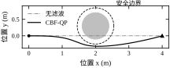
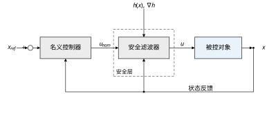
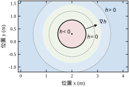
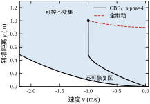
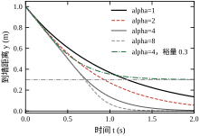
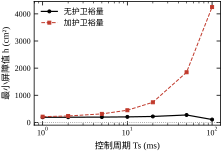
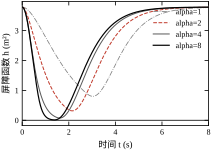
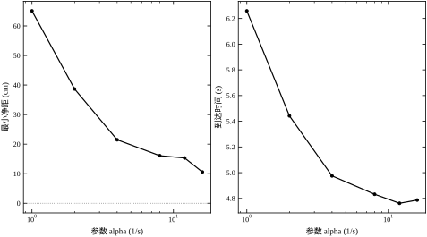
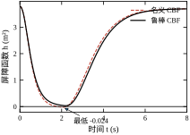
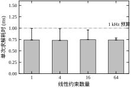

一辆在仓库里穿行的 AGV，控制器设计得很好：定位误差小于 5 mm，速度环带宽 120 Hz，轨迹跟踪的稳态误差可以忽略。某天货架被临时挪动了 30 cm，激光雷达实时更新了地图，避障模块也把新障碍写进了代价地图，可车还是擦着货架过去了——不是定位不准，也不是感知没看到，而是控制器从来就不知道“撞上”这件事在数学上意味着什么。它的全部任务是让位置误差趋零，而“趋零”的最短路径恰好穿过货架。
这类事故的共同点是：性能指标和安全性被混为一谈。跟踪误差小、响应快、超调低，这些都是“做得好不好”的度量，它们并不包含“绝对不许发生”的约束。工程上必须把后者单独拿出来，用一个只关心“能不能越界”的机制去保证，这就是本章的主题——安全控制。
本章用同一个算例贯穿始终：一个二维质点从 (0,0) 出发，目标 (4,0)，在 (2,0.30) 处有一个半径 0.40 m 的圆形障碍，另有 0.15 m 的工程裕量，因此安全边界半径为 0.55 m。质点受加速度控制，各轴限幅 \pm 5\ \mathrm{m/s^2}，名义控制器是一个 PD：u_{nom}=-K_p(p-p_d)-K_d v，取 K_p=2.25、K_d=3.0，临界阻尼，无超调。
按纯 PD 仿真，质点沿直线穿过障碍中心附近，最小净距为 -10.0 cm，也就是侵入障碍内部 10 cm；到达目标用时 4.32 s。若在 PD 之后串一个安全滤波器（本章的方法），最小净距变为 +21.5 cm，代价是到达时间从 4.32 s 增至 4.98 s，路径长度从 4.00 m 增至 4.07 m。两条轨迹画在图 79-1 中。
这组参数不是随手凑的。障碍中心放在 y=0.30 而不是 y=0，是为了让直线路径擦过而不是正穿：若障碍居中，无滤波轨迹会穿入 0.40 m，对比过于悬殊，反而看不出滤波器“最小修正”的特征；偏 0.30 m 之后，名义轨迹只侵入 10 cm，滤波器只需在最后一段横向让开二十多厘米，修正量与任务量在同一量级，比较才有意义。加速度限幅 5 m/s² 约等于 0.5g，是仓储 AGV 的常见量级；0.15 m 的工程裕量对应定位误差、控制误差、建模误差各 5 cm 的量级。这些数字的来历在 79.3 节展开，这里先记住一条：算例的每个参数都应对应一个工程事实，否则仿真结论无法迁移。

图 79-1 里有两个细节值得注意。第一，滤波后的轨迹并不是“提前绕一个大圈”，它只在离障碍最近的那一段被推开，前后两段几乎与名义轨迹重合——这说明安全约束在大部分时间里是不激活的，激活时间占比只有 10.0%。第二，两条轨迹的差别只有 7 cm 的路径长度，但净距差了一个数量级（从 −10 cm 到 +21.5 cm）；安全设计很少需要大幅牺牲性能，它需要的是在正确的时刻做正确的修正。
把“安全”写成数学，第一步是承认它是一个集合而不是一个标量。给状态空间划一条边界，边界以内叫安全集 \mathcal{C}，边界以外叫不安全集。控制器要保证的不是“误差小”，而是“状态永远不离开 \mathcal{C}”。
对本章算例，安全集取圆外区域
\mathcal{C}=\left\{x\in\mathbb{R}^4:\ h(x)=\|p-p_{obs}\|^2-R^2\geq 0\right\} \tag{79-1}
其中 p 是位置，p_{obs} 是障碍中心，R 是安全半径。h 称为屏障函数（barrier function）：它在安全集内为正、在边界上为零、在不安全集内为负。用一个标量函数描述一个集合的“内外部”，是本方法全部威力的来源——后面所有的约束、优化、验证都围绕这一个标量展开。
这个定义立刻带来一个必须回答的问题：h>0 只说明“此刻安全”，怎么保证“下一刻仍然安全”？如果系统以很大速度冲向边界，此刻 h=0.5 并不比 h=0.01 更安全。所以安全性必须同时约束 h 及其变化率，这正是 79.2 节要建立的前向不变性条件。
还有两点需要提前说清楚，否则后面读数字会误解。第一，h=0 对应的是“允许的最贴近位置”，不是碰撞面。R 里已经包含了障碍半径、机器人外廓与两项误差预算，所以 h 穿过零只说明裕量被吃掉了，物理上未必接触——79.9 节的算例里 h_{min}=-0.0237，实际净距仍有 12.8 cm。第二，h 的零集必须与实际几何边界一一对应。如果 h 写得比实际边界“松”，滤波器会在该拦的时候不拦；写得比实际边界“紧”，则会在不需要的时候干预。这两种错误都不会报错，只会在验收时以“净距不够”或“绕得太远”的形式暴露。
安全集的选择本身也不是唯一的，它直接决定保守程度。同一个圆形障碍，可以取“到中心距离不小于 R”（圆外），也可以取“到中心距离不小于 R 且不在障碍正后方 60° 扇区内”（更紧），还可以取“到中心距离不小于 R，但允许短暂穿越”（更松，需要额外的恢复条件）。选得越紧，可行域越小，越容易在狭窄处无解；选得越松，需要的证明越复杂。安全集是设计决策，不是客观事实——这一点在评审时经常被忽略，评审人往往只问“净距多少”，而不问“安全集凭什么这么划”。
最直接的想法是把避障写进控制器：设计一个专门的避障控制器，把跟踪和避障一起做。这条路在工程上很难走通，原因是安全逻辑与任务逻辑的更新频率、验证方式、责任归属都不同。任务逻辑随工艺变，安全逻辑随标准变；任务逻辑要频繁迭代，安全逻辑一旦验证就不许随便动。
因此工程上更常见的结构是分层：底层是一个不管安全的、性能优良的名义控制器；上层是一个只做最小修正的安全滤波器。名义控制器给出 u_{nom}，安全滤波器检查它是否会导致越界，若不导致就原样放行，若导致就找离 u_{nom} 最近的、安全的控制量。图 79-2 给出这个结构。

这个结构的两个好处在本章算例里都能量化。第一，安全层在 90.0% 的时间里完全不起作用（约束激活占比 10.0%），此时闭环行为与名义控制器逐位相同，原有性能指标不受影响。第二，安全层的输入只有当前状态和屏障函数，与任务无关；换一个任务、换一个目标点，安全层不动，只需要重新验证 h 的选取。这种“任务可换、安全不换”的性质，是它在自动驾驶、协作机器人、无人机上被大量采用的原因。
完整的系统通常是三层，而不是两层：规划层决定“走哪条路”（全局路径、避障策略），名义控制层决定“怎么沿着路走”（跟踪、镇定），安全层决定“这一拍能不能这么走”。三者回答的问题不同，失效的后果也不同。规划层算错，代价是绕远或走进死胡同，但通常还有时间重规划；名义层算错，代价是跟踪变差、超调变大；安全层算错，代价是碰撞。把安全层单独拿出来、用更严格的标准验证，正是因为它承担的是最后一票否决权。
这也解释了为什么安全层不应该“聪明”。它不参与路径选择，不做任务优化，只在必要时把控制量拉回可行域。职责越窄，越容易验证；一个同时负责避障、跟踪、能耗优化的模块，即使性能更好，也很难回答“它到底保证了什么”。反过来，一个只做投影的模块，可以说清楚“只要约束可行，就绝不越界”——这一句话就足以支撑一次安全评审。
最常见的替代方案是把安全写成罚项，塞进原来的目标函数：
J=\|p-p_d\|^2+\frac{w}{\big(\|p-p_{obs}\|-r_{obs}\big)^2}
调大 w，轨迹就会离障碍远一点；调小 w，跟踪就更紧。看起来只要 w 足够大就能保证安全，实际上这条路有三处硬伤。
第一，没有阈值。罚项是在“违反的代价”和“跟踪的收益”之间做交换，交换比由 w 决定，而安全性没有“合格线”。给定任意有限的 w，总能构造一个足够大的初始速度或足够小的可用空间，使最优解仍然穿过障碍——因为穿过障碍换来的跟踪收益也是有限的，两者始终可比。
第二，数值病态。要把 w 调到“几乎不越界”，代价函数在边界附近的曲率会大到让求解器难以收敛；而远离障碍时，这个巨大的 w 又把本不该受影响的控制扭曲了。本章算例里，滤波器的激活占比只有 10.0%，罚函数法则要求全程都带着这个权重跑。
第三，给不出证书。验收时评审会问“最坏情况下的净距是多少”，罚函数法只能回答“我们试了很多场景，最小是 21.5 cm”，无法回答“为什么不可能更小”。约束形式可以：式 (79-17) 的可行性判据是可以在设计阶段逐工况核算的，核算通过就意味着保证成立。
还有一处容易被忽略的差别：两者的失效方式不同。罚函数法在参数不合适时不会报警，它只是“悄悄地不够安全”——轨迹仍然平滑，指标仍然好看，只有净距在缓慢变小。约束形式在参数不合适时会直接报不可行，虽然难看，但至少是一个明确的信号。工程上“明确失败”远比“悄悄退化”可取，因为前者能被测试发现，后者只能等事故发生。
所以本章的选择是：把安全写成约束，把性能留给目标函数。两层各管一件事，中间通过“投影”连接。罚项并没有被完全抛弃——79.9 节的软化约束会把它用在“确实无解”的降级场合，那时它的角色是“违反最少”，而不是“保证不违反”。
本章按“集合—条件—求解—离散—参数—工程”推进：79.2 节建立屏障函数、前向不变性与 CBF 条件；79.3 节把它固化成六步设计流程；79.4 节在连续域给出一维解析解和二维算例；79.5 节讨论离散实现与采样周期的影响；79.6、79.7 节分析安全性与性能的耦合、逐个参数讲影响；79.8 节给调参规则；79.9 节给出鲁棒化、高阶屏障等改进；79.10 节落到实时性、切换与验收；79.11 节说明边界；79.12 节给出可复现代码。
如果只能记住一句话：安全控制不是在性能指标上加权重，而是在可行控制集合上做投影；投影只在约束将被违反时发生，其余时间系统仍按原控制器运行。
不同读者的路径：关心架构与验收的，读 79.1、79.3、79.10；要上手实现滤波器的，读 79.2、79.4、79.5、79.8；要做算法改进或写论文的，读 79.6、79.7、79.9、79.11。三条路径都以 79.12 的脚本为落点——不跑一遍，前面的数字都只是别人的数字。
本节要把“永远不越界”翻译成一条可以逐时刻检查的不等式。路线分四步：先规定被控对象的数学形式，再定义集合的不变性，然后把不变性写成对控制量 u 的线性约束，最后把它变成二次规划。
全书大多数对象可以写成控制仿射形式
\dot{x}=f(x)+g(x)u,\qquad x\in\mathbb{R}^{n},\ u\in\mathcal{U}\subset\mathbb{R}^{m} \tag{79-2}
其中 f 是无控制时的漂移项，g 是控制输入的作用方向，\mathcal{U} 是执行器能提供的控制集合。写成这个形式不是为了好看：它让 h 的时间导数对 u 是仿射的，从而“保持 h 不越界”在 u 上就是一条线性不等式。凡是“约束能写成控制量的线性不等式”的地方，都可以用二次规划在线求解，这是本方法能在毫秒级跑起来的根本原因。
对本章的二维质点，状态 x=[p_x,p_y,v_x,v_y]^{\mathsf{T}}，f(x)=[v_x,v_y,0,0]^{\mathsf{T}}，g(x)=[0_{2\times2};I_2]，即
f(x)=\begin{bmatrix}v\\0\end{bmatrix},\qquad g(x)=\begin{bmatrix}0&0\\0&0\\1&0\\0&1\end{bmatrix} \tag{79-3}
控制集合 \mathcal{U}=\{u:\ |u_i|\leq a_{max},\ i=1,2\}，a_{max}=5\ \mathrm{m/s^2}。这个对象是二阶的（位置、速度），而 h 只依赖位置，所以 h 对时间的相对阶为 2——这一点决定了后面的推导要用的不是普通 CBF，而是高阶屏障函数。
设安全集 \mathcal{C}=\{x:h(x)\geq 0\}。称 \mathcal{C} 关于闭环系统前向不变，是指：只要 x(0)\in\mathcal{C}，就有 x(t)\in\mathcal{C} 对一切 t\geq 0 成立。前向不变性是安全的严格数学定义，它比“没有发生碰撞”强：后者只说明过去没撞，前者保证以后也不撞。
不变性的局部判据是 Nagumo 条件：在边界 \partial\mathcal{C} 上，允许的速度必须指向集合内部或与边界相切。对由光滑函数 h 定义的水平集，这个条件写成
h(x)=0\ \Longrightarrow\ \dot{h}(x)\geq 0 \tag{79-4}
直觉很清楚：h 已经到零了，此刻它的变化率不能是负的，否则下一步就掉到集合外面。但式 (79-4) 只在边界上生效，它不告诉你“离边界还有 0.3 m 时应该留多少余量”。工程上需要一条对整个集合内部都生效的条件，这就是下面要引入的类 \mathcal{K} 函数。
把式 (79-4) 的右侧从零放宽到一个与 h 成正比的项，得到
\dot{h}(x,u)+\alpha\big(h(x)\big)\geq 0,\qquad \forall x\in\mathcal{C} \tag{79-5}
其中 \alpha(\cdot) 是严格递增且 \alpha(0)=0 的类 \mathcal{K} 函数。取线性形式 \alpha(h)=\alpha h（\alpha>0，单位 1/s），式 (79-5) 变成
\dot{h}(x,u)\geq-\alpha h(x) \tag{79-6}
它的含义是：h 允许下降，但下降速度被 h 本身限住。离边界越近，允许的下降速度越小；到边界时允许速度为零，正好回到式 (79-4)。由比较引理可以解出这条不等式的后果
h\big(x(t)\big)\geq h\big(x(0)\big)\mathrm{e}^{-\alpha t}\geq 0 \tag{79-7}
也就是说，h 最多按指数衰减到零，永远不能在有限时间内穿过零。这就是 CBF 给出的安全保证：指数渐近地贴边，而不是撞上去。
“不能在有限时间内穿过零”这句话值得多看一眼，因为它解释了很多现象。指数函数永远不会真正取到零，所以理论上轨迹可以无限接近边界而不越界；实际系统里，一旦 h 小到与噪声同量级，“是否越界”就变成了一个由测量误差决定的问题，而不是由控制律决定的问题。CBF 的保证在数学上是严格的，在物理上有一个由噪声决定的分辨率下限。这也是为什么 79.3 节坚持把裕量写进 R，而不是指望控制器把 h 稳在零附近。
\alpha 的量纲是 1/s，可以读成“屏障函数的衰减时间常数的倒数”。\alpha=4 意味着 h 的时间常数是 0.25 s，一个“危险程度”从 1 衰减到 0.37 大约需要这么长时间。把它与闭环带宽对比是有意义的：若安全层的时间常数比任务层还长，安全层就来不及在轨迹穿出边界前完成修正，表现为介入过早、绕行过大；若短得太多，则要求的加速度会超出执行器能力。79.7 节给出的窗口 2\omega_n\leq\alpha\leq\alpha_{max}，正是把这两头夹住。
类 \mathcal{K} 函数的选择决定了保守程度。线性 \alpha(h)=\alpha h 最简单也最常用；若取超线性形式（例如 kh^3），系统在远离边界时几乎不受约束、接近边界时迅速收紧，相当于“只在近处使劲”。本章只用线性形式，理由有两条：它的指数下界（式 79-7）可以直接转成采样周期判据 T_s\leq0.1/\alpha；而且只有一个参数，便于把“保守程度”这件事讲清楚。更高阶的类 \mathcal{K} 函数在理论上更灵活，但可调参数变多，工程上很难说清某个参数到底在管什么。
把式 (79-6) 展开，利用式 (79-2)：
\dot{h}=\frac{\partial h}{\partial x}\big(f(x)+g(x)u\big)=L_f h(x)+L_g h(x)\,u \tag{79-8}
其中 L_f h、L_g h 是李导数。代入式 (79-6) 得到一个对 u 线性的约束
L_f h(x)+L_g h(x)\,u+\alpha h(x)\geq 0 \tag{79-9}
当 L_g h(x)\neq 0 时，对任意 x\in\mathcal{C} 都存在满足式 (79-9) 的 u（只要 \mathcal{U} 足够大），此时称 h 是一个控制屏障函数。注意这个“只要”：可行与否取决于执行器能力，这一点在 79.6、79.7 节会反复出现。
本章的 h 只依赖位置，而位置要通过两次积分才受 u 影响，于是 L_g h=0，式 (79-9) 中根本不含 u，无法用来设计控制器。处理办法是把条件再求一次导，构造一个“虚拟输出”：
\psi_1(x)=\dot{h}(x)+\alpha_1 h(x) \tag{79-10}
\psi_1 对 u 的相对阶为 1。要求 \psi_1 满足同样的条件：
\dot{\psi}_1(x,u)+\alpha_2\psi_1(x)\geq 0 \tag{79-11}
由式 (79-7) 可得 \psi_1(t)\geq\psi_1(0)\mathrm{e}^{-\alpha_2 t}\geq 0，再代回式 (79-10) 就得到式 (79-6)。所以式 (79-11) 是比式 (79-6) 更强的条件，它保证的是一个“屏障的屏障”。
对本章的二次型 h=\|p-p_{obs}\|^2-R^2，记 d=p-p_{obs}，有 \dot h=2d^{\mathsf{T}}v，逐项算得
\psi_1=2d^{\mathsf{T}}v+\alpha_1\big(\|d\|^2-R^2\big) \tag{79-12}
\dot\psi_1=2\|v\|^2+2d^{\mathsf{T}}u+2\alpha_1 d^{\mathsf{T}}v \tag{79-13}
代入式 (79-11) 并整理成 A(x)u\leq b(x) 的标准形式：
-2d^{\mathsf{T}}u\ \leq\ 2\|v\|^2+2\alpha_1 d^{\mathsf{T}}v+\alpha_2\psi_1 \tag{79-14}
这就是安全滤波器真正求解的约束。它只有一行，系数由当前状态决定，右端项随状态更新。本章取 \alpha_1=\alpha_2=\alpha；两者分开的好处是可以在“贴边速度”和“约束硬度”上分别调，79.7 节会说明。
图 79-3 画出了 h 的等值线。粗实线是 h=0 的安全边界，箭头是梯度 \nabla h，它指向 h 增大的方向。约束式 (79-14) 的几何意义是：u 在 d 方向上的分量必须足够大（把系统往外推），而切向分量完全自由——这正是“只做最小修正”的来源。
把 u 沿法向与切向分解，u=u_r e_r+u_t e_t，其中 e_r=d/\|d\|。式 (79-14) 的左端是 -2d^{\mathsf T}u=-2\|d\|u_r，只含法向分量；切向分量 u_t 在约束里根本不出现。这个结构值得记住：安全约束只限制“往外推”的力度，不限制“沿着障碍滑行”的自由。绕行时最需要的恰恰是切向速度，如果约束把切向也压住，系统就会在障碍前“停住”而不是“绕开”——很多早期势场法就是因为对各个方向一视同仁而出现这种停滞。
不过“切向自由”并不等于“切向没有代价”。切向速度越大，式 (79-14) 中的 2\|v\|^2 项越大，右端项被抬高，反而使约束更容易满足——这是二次型屏障函数的一个特点：高速掠过时离心项帮忙，低速贴近时反而更依赖执行器。读 79.4 节的表时要留意这个反直觉之处。

有了线性约束，安全滤波器就是一个标准的二次规划：
\begin{aligned} u^\star=\ &\arg\min_{u}\ \tfrac{1}{2}\|u-u_{nom}\|^2\\ &\mathrm{s.t.}\quad A(x)u\leq b(x),\qquad u\in\mathcal{U} \end{aligned} \tag{79-15}
目标函数选“离 u_{nom} 最近”而不是别的，有三条理由。第一，它保证在约束不起作用时 u^\star=u_{nom}，安全层对原系统零影响。第二，它是最小范数修正，修正量与违反程度同阶，不会引入多余动作。第三，它是一个严格凸的 QP，解唯一、对数据连续依赖，便于工程实现和稳定性分析。
从几何上看，式 (79-15) 是把 u_{nom} 投影到“半空间与盒的交”这个凸集上。凸投影有一个性质对工程很重要：投影点唯一，且对固定的凸集，投影映射是 1-Lipschitz 的——u_{nom} 的小扰动不会引起投影点的大跳变。约束本身随状态移动时，这个性质不能直接照搬，但在相邻两个采样周期之间，只要 A(x)、b(x) 变化不大，投影输出的变化就与 u_{nom} 的变化同阶，不存在“放大”效应。79.6 节讨论的切换抖动，正是这条近似在边界附近失效的表现。若把目标函数换成非凸形式（例如带死区的加权），连固定凸集下的唯一性都会丢失。
从对偶角度看，这个问题还有一个有用的解释。设约束的拉格朗日乘子为 \mu\geq0，一阶条件是 u^\star=u_{nom}-\mu A^{\mathsf T}，即修正量总是沿约束法向、大小由 \mu 决定。\mu 的物理意义是“这一拍的安全约束值多少加速度”：\mu 越大，说明约束越紧、需要越大的修正。工程上把 \mu 记录下来，比记录 u^\star 更能反映系统的紧张程度——它不受控制量基线的影响，是一个纯粹的“安全压力”指标。很多实现只记录 h，但 h 小并不一定意味着紧张（可能速度很低，根本不需要修正），\mu 才真正对应“滤波器正在多用力”。
当只有一个线性约束加一个盒约束时，式 (79-15) 有闭式解：先按盒约束截断，若仍违反则沿 -A^{\mathsf{T}} 方向投影到约束边界上。本章的求解器就是按这个思路写的，79.4 节给出细节，79.10 节给出它与通用 QP 求解器的耗时对比。
需要强调一点：式 (79-15) 的可行性不是自动的。当状态已经恶化到“任何允许的 u 都无法阻止 h 下降”时，QP 无解，此时任何实现都必须有一个明确定义的回退动作，而不是让求解器报错后继续输出上一次的控制量。这是 79.10 节要展开的工程要点。
盒约束加单行线性约束时，可行性可以在求解之前用一行算式判掉。约束 A(x)u\leq b(x) 在最坏方向上的最小值是
\min_{u\in\mathcal{U}}A(x)u=-\sum_{i=1}^{m}a_{max}\,|A_i(x)| \tag{79-16}
于是可行当且仅当
b(x)\ \geq\ -\sum_{i=1}^{m}a_{max}\,|A_i(x)| \tag{79-17}
对本章的 A=-2d、b 由式 (79-14) 给出，式 (79-17) 变成 2a_{max}(|d_x|+|d_y|)+b\geq 0。这条判据有两个用处：一是在线做一次开销可忽略的预检查，把“要报错”的情形提前识别出来；二是离线做参数核算，给定 a_{max} 与 \alpha，算出在多大的接近速度下约束会失效。后者属于设计阶段的工作，不能留到运行阶段才发现。
式 (79-16) 的推导只有一步：盒约束下每个分量独立取值，要让 A_iu_i 之和最小，就逐项取 u_i=-a_{max}\,\mathrm{sign}(A_i)，此时 A_iu_i=-a_{max}|A_i|，求和即得。注意这里用的是一范数而不是二范数——因为盒约束是逐分量的，可行域的“最远点”由各轴独立决定。这也解释了为什么式 (79-17) 在二维时表现为 |d_x|+|d_y| 而不是 \|d\|：前者对应菱形（盒约束的像），后者对应圆。用二范数去算会高估执行器能力，在斜向切入时尤其危险。
本章算例给出一个具体界线：当 \alpha=8 时，全程没有一次不可行；把 \alpha 提到 16，不可行步数跳到 269 步（总步数 12 000），同时最小屏障值从 +0.0122 掉到 -0.0467。也就是说，\alpha 不是越大越安全，它同时提高了对加速度的需求，一旦超出执行器能力，保证就断了。79.7 节会把这条界线算清楚。
把判据用在“刚刚贴到边界”这个工况，可以算出一个很有用的数：边界处允许的最大法向速度。取 h=0、d=Re_r、v=-v_re_r（v_r>0 为接近速度），式 (79-14) 化为
u_r\ \geq\ (\alpha_1+\alpha_2)\,v_r-\frac{v_r^2}{R}
代入 \alpha_1=\alpha_2=4、R=0.55、a_{max}=5：v_r=0.5 m/s 时要求 u_r\geq3.55，可行；v_r=1.0 m/s 时要求 u_r\geq6.18，已经超过执行器能力；临界值在 v_r\approx0.75 m/s。这条式子把“为什么要在远处就开始减速”讲清楚了——不是怕撞，而是边界附近的执行器只够处理 0.75 m/s 的法向速度。
本章算例的峰值速度是 1.63 m/s，远高于 0.75，所以轨迹不可能带着这个速度贴到边界；它必须在到达最近点之前把法向速度降到接近零，这也是 h_{min} 恰好出现在“法向速度为零”那一刻的原因。反过来，加大 R、减小 \alpha 或提高 a_{max} 都能抬高这个上限，三者对安全性的作用方向由此统一到同一个式子里。
CBF 与可达性分析（reachability analysis）解决的是同一个问题的两个侧面，工程上经常需要一起用。
可达性分析回答的是“从这个初始状态出发，用任何允许的控制，能不能保证永远不进入不安全集”。它的答案是一个集合：最大可控不变集（viability kernel），记作 \mathcal{K}。\mathcal{K} 是满足“存在一个控制律使集合不变”的状态的最大集合。它的优点是给出完整答案——不仅知道当前该做什么，还知道哪些初始状态已经救不回来；缺点是精确计算代价高，高维系统通常只能近似。
CBF 回答的是“给定一个已经选好的安全集 \mathcal{C}，能不能在线构造出一个让它不变的控制器”。它的答案是一个条件加一个在线优化，计算量小、可实时，但它是充分条件：h 选得不好，\mathcal{C} 可能远小于 \mathcal{K}，控制器就会过度保守；h 选得太大，\mathcal{C} 里可能有一部分状态根本无法保持，运行时表现为 QP 不可行。
两者的正确分工是：离线用可达性分析（或其简化版）确定 \mathcal{K} 的形状，据此选 h 和裕量；在线用 CBF-QP 做逐时刻的执行。79.4 节的一维算例会把这两个集合画在同一张相平面上，直观看到它们的关系。
用一维算例可以看清“充分条件”这四个字的分量。物理上“停得住”的区域由抛物线 y\geq v^2/(2a_{max}) 界定，这是 \mathcal{K} 的边界；而 CBF 用二次型 h=y^2 加线性衰减率，得到的可行区域边界是那条饱和线 y=-(2\alpha v+a_{max})/\alpha^2。后者在接近段整体位于前者上方，也就是更保守——\mathcal{K} 里有相当一部分状态，CBF 会判为“不敢去”。反过来，若把 h 取得过大（例如把 R 设得很小），\mathcal{C} 可能部分落在 \mathcal{K} 之外，那时 CBF 平时看起来正常，一旦进入那部分区域就立刻不可行。保守与不可行，是 h 选得偏小或偏大的两种表现，方向相反，原因相同。
把一个安全滤波器从零做出来，按下面的六步走。每一步都有明确的输入、输出和判据，做完一步再进下一步；跳过任何一步，后面都会以“调不出来”的形式还回来（表 79-1）。
表 79-1 安全滤波器的六步设计流程
| 步 | 动作 | 输出 | 完成判据 |
|---|---|---|---|
| 1 | 定状态、定安全集 | x、h(x)、R | h 的零集与实际几何边界一一对应 |
| 2 | 算相对阶 | \psi_i 或高阶条件 | 约束中显含 u，且系数不全为零 |
| 3 | 写 A(x),b(x) 并核可行域 | 约束表达式 | 式 (79-17) 在设计工况下留有余量 |
| 4 | 选名义控制器与权重 | u_{nom}、Q | 无约束时闭环指标达标 |
| 5 | 离散实现 | T_s、护卫裕量、求解器 | 采样周期内状态变化小于裕量 |
| 6 | 验证与回退 | 场景库、回退策略 | 全场景 0 越界，且不可行有定义 |
六步不是单向流水线。第 5 步算出裕量后，若发现它占 R 的比例过大，必须回到第 1 步重新审视误差预算或执行器能力；第 6 步发现某个场景不可行，也要回到第 3 步重核式 (79-17)。真正一次走通的情况很少，多数项目会在 1–3 步与 5–6 步之间来回两三次。
把六步的输入输出写清楚，是因为它们决定了这个模块能不能被独立评审。第 1 步的输出是一个函数 h 和一个数 R，评审人可以只看这两样就判断“安全集定义得对不对”，不需要读代码；第 2、3 步的输出是约束 A(x)u\leq b(x)，评审人可以拿它去和论文里的标准形式对照；第 5 步的输出是三个数 T_s、m、求解器上限，评审人可以拿算力预算去核；第 6 步的输出是一组场景记录。能被分段评审的东西，才可能被真正验证；一个把六步揉在一起、只有一份大代码的实现，评审时只能靠“作者说没问题”。
先确定状态里哪些分量决定安全。多数移动系统只看位置，但高速机械臂要看到末端速度，柔性结构要看到模态坐标，所以这一步不能想当然地取 h=\|p-p_{obs}\|^2-r^2。
这里有一条容易被忽视的约束：h 里出现的量必须是可测量或可估计的。如果 h 依赖一个测不到的中间变量，滤波器就只能用估计值代替，估计误差会直接变成安全裕量的漏洞。宁可把 h 选得保守一些、只用可靠测量的量，也不要用一个“理论上更精确但测不准”的屏障函数。
安全半径的取法是一条工程纪律：R=r_{obs}+r_{robot}+\delta_{sense}+\delta_{ctrl}。四项分别是障碍半径、机器人外廓、定位误差和控制误差。本章算例取 0.40+0.15=0.55 m，把后三项并进 0.15 m；现场应当拆成 0.40+0.05+0.05+0.05 逐项写清楚，因为验收时要拿这四项去核对，而“0.15 是怎么来的”是最常被追问的问题。
h 的另一个选择是“带符号距离”而不是“距离平方”。平方形式的好处是导数简洁、约束线性；带符号距离的好处是梯度大小恒为 1，不同距离处的“惩罚力度”均匀。平方形式在远处梯度大、近处梯度小，正好与实际需要的修正力度相反，这是它在某些场合表现偏软的原因，79.9 节会给出改进办法。
对 h 沿式 (79-2) 求导，看第一次出现 u 是在第几阶。这一步决定了条件的形式：
本章的二维质点是相对阶 2。若把状态改成“位置 + 速度指令”（速度环当作一阶惯性），相对阶就降到 1，约束里直接出现 u，数值上更好处理。这是工程上常用的简化：宁可在建模上多花时间把相对阶降下来，也不要在算法上叠高阶条件。代价是速度环的滞后变成了模型的一部分，必须计入 R 的 \delta_{ctrl}，否则降阶带来的便利会被时延抵消掉。
相对阶不必靠肉眼判断，可以数值验证：在当前状态随机取若干组 u，差分计算 \dot h，若结果与 u 无关（变化在数值噪声以内），说明相对阶大于 1；再用同样办法看 \ddot h 是否随 u 线性变化。这一步花十分钟，能省掉后面几天的困惑——相对阶判断错误的典型症状是“约束永远满足”，因为 A(x)\equiv0，滤波器实际上什么也没做。
把 A(x)、b(x) 写出来之后，不要急着写代码，先用式 (79-17) 在几个典型工况上算一遍：最接近障碍的点、最高接近速度、最不利的切入角。若某个工况下 b 与 -a_{max}\sum|A_i| 只差几个百分点，说明设计处在临界状态，必须加大裕量或提高执行器能力。
本章算例的设计点：峰值接近速度 1.63 m/s，\alpha=4，a_{max}=5，运行 12 000 步无一次不可行。同一对象把 \alpha 提到 16，式 (79-17) 的余量变为负，出现 269 步不可行，说明这个参数已经越界。
这里有一个容易犯的错：核算时不能把“最高速度”与“最近距离”这两个最不利值直接拼在一起。本章的峰值速度 1.63 m/s 出现在远离障碍的加速段，而最近点处的法向速度接近零；若按“1.63 m/s 且贴在边界上”去核，会得到 u_r\ge8.2 的结论，远大于 a_{max}，从而误判为不可行。正确的做法是沿名义轨迹逐点核算：在每一个采样点上用当时的 d、v 代入式 (79-17)，看最小余量出现在哪里。这样得到的结论才是这条轨迹真实需要的执行器能力。
写完 A、b 之后还要做一次量纲核对，这一步只要一分钟，却能拦住最难查的一类错误。h 的量纲是 m²，所以 \dot h 是 m²/s，b 是 m²/s²；A 的量纲必须是 m，才能与 u 的 m/s² 相乘得到 m²/s²。若你写的 A 是 \mathrm{m^2} 量级（例如误用了 \|d\|^2 而不是 d），等式两边差一个长度量纲，数值上仍然能算，只是约束的“尺度”随距离变化——远处的约束被放大、近处的被压缩，表现恰好是“离得远就开始猛烈转向，贴近时反而变软”。这类错误不会报错、不会崩溃，只会让参数怎么调都不对。核对办法很简单：取一组具体的 d、v、u，手工算一遍 Au-b 的数值，再与代码打印的值比对，差值应在浮点误差内。
名义控制器就是原来那套，不需要为安全做任何妥协。唯一的改动是把输出限幅与 QP 的盒约束对齐：名义控制器限幅到 \pm a_{max}，QP 的 \mathcal{U} 也用同一个 \pm a_{max}，否则会出现“名义输出超出 QP 可行域”的假性不可行。
QP 的权重矩阵 Q 通常取单位阵。若某些通道的物理量纲不同（例如一个轴是力、另一个是力矩），必须先把 Q 按量纲归一化，否则“最小修正”会退化成“优先修正量纲小的那个通道”，这是一个很隐蔽的错误。
举个具体的例子。若控制的第一个分量是 100 N 量级的推力，第二个是 1 N·m 量级的力矩，而 Q=I，那么优化器会认为“改动 1 N·m 与改动 1 N 的代价相同”。实际上前者可能是满量程的 1%，后者也是满量程的 1%——量纲不同不代表重要性不同，但二次型里的数值直接比较了它们。正确的做法是先按各通道的满量程做归一化，令 u_i'=u_i/u_{i,max}，再在新的坐标下做单位权重的投影，最后变换回去。这样“最小修正”才真的是几何意义上的最小。
连续时间的保证在离散实现下会打折扣，原因是控制量在一个采样周期内保持不变，而约束只在采样点被检查。工程上有三条固定动作：
第二条规则来自式 (79-7)：一个周期内 h 的合法下降比例是 1-e^{-\alpha T_s}\approx\alpha T_s，要求它不超过 10%，就得到 \alpha T_s\leq0.1。这不是精确的稳定性条件，而是一条把离散误差控制在“与 \alpha 同尺度”的经验线——取 10% 意味着离散化最多让有效 \alpha 打九折，参数窗口不会被挤掉太多。
本章算例：高速接近（峰值约 2.9 m/s）时，T_s=100 ms 的护卫裕量为 0.312 m，最小屏障值从 1 ms 时的 +0.0188 掉到 +0.0106，并出现 3 步不可行；加上护卫裕量后恢复到 +0.4250。这组数说明：离散化的代价首先体现为保守性，其次才是可行性。
验证不是“跑一遍仿真看着没问题”，而是三件事：一是场景库覆盖（直冲、斜切、贴边绕行、目标点在障碍后方、多障碍）；二是边界工况（最高速度、最大加速度、最小裕量同时出现）；三是故障注入（传感器延迟、状态估计跳变、求解超时）。
回退策略必须写进需求，不能留给实现者临场决定。常用的是“最大制动”：一旦不可行，输出使 h 下降最慢的控制量，同时上报故障。本章的代码在不可行时输出沿 d 方向的最大加速度，并在指标里统计不可行步数——有统计才能验收。
故障注入至少要覆盖三类情形，每一类都要有明确的预期行为。第一类，状态估计跳变：把位置突然平移 10 cm，检查滤波器是否输出一个方向正确、幅度有限的修正，而不是连续振荡；第二类，求解超时：把求解时限压到 1 μs，检查系统是否进入回退分支并置故障位，而不是沿用陈旧解；第三类，执行器能力下降：把 a_{max} 临时降到 1 m/s²，检查不可行是否被统计、是否被上报，以及报告的数值能否对得上人工核算。三类都不要求系统“继续完成任务”，只要求“不越界、状态可查、故障可追”。
验证还要记录一组基线数据，供后续回归比对：本章的基线是最小净距 21.5 cm、到达时间 4.98 s、激活占比 10.0%、不可行 0 步。任何代码改动之后重跑，四项中任何一项偏离超过 5%，都要解释原因。没有基线，“改完好像差不多”就会变成永久的技术债。
基线要冻结成一份可执行的清单，而不是记在某个人的笔记里。最简做法是把这四个数写进测试脚本，用 assert 比较，容差按 5% 设；再把这套测试挂到每次提交上。听起来很笨，但它能在“有人顺手把 \alpha 从 4 改成 5”的当天就发现问题，而不是等到三个月后的实车测试。安全层的回归测试不需要覆盖所有场景，覆盖这四个数就够了——它们分别对应几何、时间、算力占用和可行性，任何实质性改动都会至少动到其中一个。
六步做完，安全层就是一个独立的、可单独验证的模块。它不知道任务是什么，只知道“哪些状态不许去”，这正是 79.1 节强调的分层价值。
连续时间下，CBF 的保证是严格的：只要初始状态在安全集内，且每个时刻都满足约束，那么对一切 t\geq0 都有 h(x(t))\geq0。这一节用两个能算出结果的最小例子把这条链路走完：一维系统可以写出全部解析表达式，二维系统把 QP 化成一次一维求根。两个例子共用 79.1 节的同一套参数，全部数字来自 code/ch079_sim.py 的实际运行。
取小车正对墙壁，状态为到墙距离 y 与沿 -y 方向的速度 v（v<0 表示接近），控制为减速度 u\in[0,a_{max}]。安全集取 h=y，于是
\dot h=v,\qquad \ddot h=u \tag{79-18}
相对阶为 2。按 79.2 节的高阶构造，\psi_1=\dot h+\alpha_1 h=v+\alpha_1 y，要求 \dot\psi_1+\alpha_2\psi_1\geq0，取 \alpha_1=\alpha_2=\alpha 得
u+2\alpha v+\alpha^2 y\geq0 \quad\Longleftrightarrow\quad u\geq-2\alpha v-\alpha^2 y \tag{79-19}
式 (79-19) 的右端是一个“随距离与接近速度变化的最小减速度”：离墙越近、接近越快，要求的减速度越大。注意当 y\to0 且 v<0 时右端趋于 2\alpha|v|，与距离无关，这是相对阶 2 的相对阶特性在起作用——最后一段靠速度项兜底，位置项已经没有余量可用。
与它对照的是“来得及停下”的物理条件。以 a_{max} 全力制动，从 (y,v) 出发的停止距离为 v^2/(2a_{max})，因此
y\geq\frac{v^2}{2a_{max}} \tag{79-20}
是相平面上的可控不变集边界：在曲线上方，存在控制使小车停在墙前；在曲线下方，任何控制都来不及。图 79-4 把这个集合、CBF 闭环轨迹和全制动轨迹画在一起。

图中阴影为式 (79-20) 上方的可控不变集，黑实线是它在下半平面的边界。从初始点 (1.0,-1.0) 出发立刻全力制动的轨迹（灰线）沿着 y=0.9+v^2/10 走到 (0,0.90)，停在距墙 0.90 m 处；CBF 轨迹（蓝线）则先向墙滑行，直到式 (79-19) 的右端由负变正才开始减速，最终停在 0.003 m 处。两条线都在可控不变集内，但保守程度相差三个数量级。
这个对比点出了 CBF 的一个本质：它保证的是 h\geq0，不是“留足余量”。数学上 3 mm 与 900 mm 同样安全，工程上完全不同。79.4.5 节会用裕量把这两者重新对齐。
相平面上还有两条线值得画出来，它们把“什么时候介入”和“什么时候已经来不及”分开了。令式 (79-19) 的右端等于名义控制（这里是 0），得到介入线
y=-\frac{2v}{\alpha}
轨迹在这条线之上时约束不活跃，穿过去才开始刹车。v=-1 m/s、\alpha=4 时它给出 y=0.5 m，与 79.4.5 节“前 0.5 s 控制量恒为零、距离约 0.5 m 才开始减速”完全对应。再令右端等于 +a_{max}（注意是正的上限，因为靠近墙时约束要求的是“往外推”），得到饱和线
y=-\frac{2\alpha v+a_{max}}{\alpha^{2}}
在它之下，即使全力往外推也满足不了式 (79-19)，CBF 判不可行。v=-1 时给出 y=0.1875 m，而真正的物理制动距离只有 v^2/(2a_{max})=0.1 m。CBF 的不可行区比物理不可行区更靠外，约 1.9 倍，这段差距就是 \alpha 带来的保守性——它不允许你把速度带到离墙 10 cm 的地方再刹，因为那样 h 的衰减速率会超过 e^{-\alpha t} 允许的范围。
三条线（介入线、饱和线、抛物线边界）的关系可以概括为一句话：介入线决定“早不早”，饱和线决定“来不来得及”，抛物线决定“物理上可不可能”。在接近段（v<0）三条线自上而下排列，中间夹着的就是 CBF 的“舒适区”：在这里它可以只用一个不大的减速度把轨迹拉回，既不越界，也不饱和。设计时先看介入线能否把轨迹拉回，再看饱和线是否始终在轨迹下方，最后才用抛物线判断这个工况本身是否可救。
二维算例的状态为 x=(p,v)，安全函数 h=\|p-p_{obs}\|^2-R^2，相对阶 2，二阶展开后约束可写成 A(x)u\leq b(x)，其中 A=-2d^{\mathsf T}，d=p-p_{obs}。于是每步要解的是
\min_{u}\ \tfrac12\|u-u_{nom}\|^2 \quad\text{s.t.}\quad Au\leq b,\quad -a_{max}\mathbf 1\leq u\leq a_{max}\mathbf 1 \tag{79-21}
只有一个标量不等式，最优解必在“从 u_{nom} 沿 -A^{\mathsf T} 方向移动”这条直线上——这是欧氏投影的几何性质，不需要拉格朗日乘子也能看出来。把盒约束并进来，可行点可参数化为
u(\lambda)=\mathrm{clip}\big(u_{nom}-\lambda A^{\mathsf T},\,-a_{max},\,a_{max}\big),\qquad \lambda\geq0 \tag{79-22}
定义残差 f(\lambda)=A\,u(\lambda)-b。沿 -A^{\mathsf T} 移动会单调降低 Au，所以 f 关于 \lambda 单调不增：f(0)\leq0 说明名义控制本来就安全，直接放行；f(0)>0 则先倍增找到使 f<0 的上界，再二分 60 次得到
\lambda^{\star}=\min\{\lambda\geq0:\ f(\lambda)\leq0\},\qquad u^{\star}=u(\lambda^{\star}) \tag{79-23}
这段实现不到二十行，是本章代码的做法。它比通用求解器快两个数量级：单约束、标量目标下，中位耗时 8.2 μs（这是约束未激活时的路径），P95 254.6 μs——尖峰落在需要完整二分的那少数步上。作为对照，79.10 节用 cvxpy+OSQP 解同类问题，中位 0.77 ms，仍然够 1 kHz，但一个周期已经用掉 77%。
这里的选择原则值得记住：约束是标量时不要上通用求解器。二分的精度由迭代次数决定，60 次已到双精度极限，再多的迭代没有意义；而通用求解器的固定开销（建模、稀疏矩阵组装、收敛判据）在小规模问题上完全无法摊销。
二分的收敛性依赖一个前提：f(\lambda) 单调不增。这一点由 u(\lambda)=\mathrm{clip}(u_{nom}-\lambda A^{\mathsf T}) 保证——沿 -A^{\mathsf T} 走，Au 严格下降，直到所有分量都撞上盒约束才停。撞上之后 f 不再变化，二分仍能收敛，只是返回的 \lambda^\star 可能落在“已经无改进”的区间里。此时若 f 仍为正，说明盒约束已经把可行方向堵死，属于执行器能力不足，代码里对应的分支就是返回沿 d 方向的最大推力并把可行标志置假。
数值上有一个边界要处理：当 \|d\| 很小时，A=-2d 的模长趋于零，约束几乎“看不见”，此时 f(\lambda) 对 \lambda 的敏感度也趋于零，二分可能把 \lambda 推到很大才找到变号点。若不加保护，\lambda 的倍增会一路涨到上限 10^6，返回一个幅度极大的控制量。本章代码在倍增循环里设了上界，并在不可行分支里用 max(‖d‖, 1e-9) 做归一化保护，两处都是为了在接近碰撞的极端情形下保持数值可控——不是为了算得更准，而是为了不产生非法值。
还有一个更快的替代做法：u(\lambda) 是分段线性的，可以按“哪些分量先撞上盒约束”分成若干段，在每段内解一个线性方程，取最小的可行 \lambda。这样不需要迭代，代价是要处理 2^n 种组合。二维时组合数只有 4，解析解是划算的；维度升高后组合爆炸，二分反而更稳。闭式解不是“更高级”，只是“在低维时更便宜”。
把上面两个模块接到 79.1 节的场景上，得到表 79-2。
表 79-2 二维避障算例：名义控制与 CBF-QP 的对比
| 指标 | 无滤波 | CBF-QP |
|---|---|---|
| 最小净距 / cm | −10.0 | +21.5 |
| 最小屏障值 h_{min} / m² | −0.2125 | +0.0754 |
| 到达时间 / s | 4.32 | 4.98 |
| 路径长度 / m | 4.00 | 4.07 |
| 峰值加速度 / (m/s²) | 5.00 | 5.00 |
| 约束激活占比 | — | 10.0% |
| 不可行步数 | — | 0 |
| 求解中位耗时 / μs | — | 8.2 |
四组数字值得逐条读。
净距从 −10.0 cm 变成 +21.5 cm。负号不是“擦边”，是实打实地穿进障碍 10 cm——名义控制器根本不认识障碍，它只朝目标点走。滤波后最近点距障碍表面 21.5 cm，比安全边界所对应的 R-r_{obs}=0.15 m 还多 6.5 cm，说明轨迹是从边界内侧通过的，而不是贴着约束滑过去。
代价是 0.66 s 和 7 cm 路径。相对 4 m 的行程，绕行只多了 1.75% 的路程。这就是“投影”与“加权”的差别：加权罚函数要让轨迹远离障碍，必须给足够大的权重，代价是全过程的控制都被扭曲；投影只在约束边界附近改动控制，其余时间原样放行。
激活占比 10.0% 说明 90% 的时间安全滤波器是一个恒等映射。这也是分层结构在算力上的好处：安全层的平均开销接近于零，只有靠近障碍的那段时间才真正消耗求解时间。
峰值加速度两列都是 5.00，说明滤波后的控制仍然贴着执行器上限——CBF 不会“温柔地”绕行，它会在需要时用满全部能力。这一点常被误解，以为安全滤波器会让系统变“软”；实际上它只是把控制从“朝目标”改成“朝目标且不越界”，力度可以一点都不减。
最后两行说明“保证成立”与“算得过来”这两件事同时做到了。不可行 0 步意味着式 (79-17) 在整个 12 000 步里始终有余量；中位耗时 8.2 μs 意味着在 1 kHz 的周期里，安全层只占 0.8%，剩下的算力都可以留给任务层。这两个数字要一起看：只报 0 步不可行而不报耗时，读者会怀疑是不是把 R 取得过大；只报耗时而不报不可行步数，则无法判断这个速度是不是用“经常来不及”换来的。
还要注意 8.2 μs 是约束未激活时的路径（直接比较后放行），不是完整二分的耗时。完整的二分路径在 P95 那一侧，本章实测 P95 为 254.6 μs。汇报时用一个数概括“求解很快”是不准确的；正确说法是“90% 的周期走快路径（8.2 μs），10% 的周期走完整投影（最坏 254.6 μs）”。
把 \alpha_1=\alpha_2=\alpha 作为唯一变量扫描，其余参数不动，得到表 79-3。
表 79-3 \alpha 扫描（其余参数同 79.1 节，a_{max}=5 m/s²）
| \alpha / (1/s) | 最小净距 / cm | h_{min} / m² | 到达时间 / s | 峰值加速度 | 激活占比 | 不可行步数 |
|---|---|---|---|---|---|---|
| 1 | +65.1 | +0.8020 | 6.26 | 1.74 | 22.7% | 0 |
| 2 | +38.7 | +0.3161 | 5.44 | 3.81 | 15.7% | 0 |
| 4 | +21.5 | +0.0754 | 4.98 | 5.00 | 10.0% | 0 |
| 8 | +16.1 | +0.0122 | 4.83 | 5.00 | 5.5% | 0 |
| 16 | +10.6 | −0.0467 | 4.79 | 5.00 | 3.0% | 269 |
三个趋势很清楚：净距随 \alpha 单调下降（65.1 → 10.6 cm），到达时间单调缩短（6.26 → 4.79 s），激活占比单调下降（22.7% → 3.0%）。原因在式 (79-7) 的指数下界：\alpha 是允许 h 衰减的速率，\alpha 越大，系统被允许越快地逼近边界，因此越“敢”往障碍附近走。这就是 79.2 节那句“\alpha 是保守性旋钮”的定量版本。
\alpha=1 是典型的过度保守：为了让 h 缓慢衰减，系统从很远处就开始被约束拽住，全程 22.7% 的时间在解约束，最后离障碍 65 cm——比 \alpha=4 多出两倍，到达时间还晚了 1.28 s。这种参数在现场很常见，因为“看起来更安全”。
\alpha=16 是另一头的失败。h_{min} 变成负值，同时出现 269 步不可行，说明需要的最小加速度超过了 a_{max}，式 (79-17) 的判据被破坏。注意此时“激活占比”反而最低（3.0%）——约束在少数步里被触发，但一触发就已无法满足。激活占比低不等于安全，这个指标只能用来看平均算力，不能用来判断保证是否成立。
\alpha=4 与 \alpha=8 是可用区间。前者留 21.5 cm 净距、代价 0.66 s；后者留 16.1 cm、代价 0.51 s，但 h_{min} 只剩 +0.0122，对扰动和离散化几乎没有余量。工程上若无特殊要求，取 \alpha 在 4\sim8 之间，并把式 (79-17) 的余量核到 30% 以上。
回到一维例子，用 y_0=1.0 m、v_0=-1.0 m/s、a_{max}=5 m/s² 运行，得到表 79-4 与图 79-5。
表 79-4 一维紧急制动的停止位置与峰值减速度
| \alpha / (1/s) | 停止位置 / m | 最小位置 / m | 峰值减速度 / (m/s²) |
|---|---|---|---|
| 1 | 0.050 | 0.050 | 1.00 |
| 2 | 0.010 | 0.010 | 0.74 |
| 4 | 0.003 | 0.000 | 1.47 |
| 8 | 0.001 | 0.000 | 2.94 |
| 4（0.30 m 裕量） | 0.303 | 0.300 | 1.47 |

三条结论。
第一，CBF 只在必要时介入。\alpha=4 时前 0.5 s 控制量恒为零——式 (79-19) 的右端还是负的，滤波器没有理由改动名义控制（这里是“不加速”）。直到距离降到约 0.5 m，约束才变为活跃，减速度随即上升。这与二维算例 10.0% 的激活占比是同一件事的两个尺度。
第二，零裕量的“安全”只是数学上的安全。四组参数分别停在 50、10、3、1 mm，都在 h\geq0 之内，但没有一组是工程可接受的。CBF 的保证不包含“最小间距”这一项，最小间距必须由使用者通过 R 里的 \delta_{sense}+\delta_{ctrl} 显式给定。最后一行把裕量设成 0.30 m，停止位置立刻变成 0.303 m，而峰值减速度一点没变（1.47）——裕量的代价是行程，不是控制能量，这是它比“把 \alpha 调小”更划算的原因。
第三，峰值减速度对 \alpha 不单调。\alpha=1 时为 1.00，\alpha=2 反而降到 0.74，再往上又升到 1.47、2.94。原因是 \alpha 同时改变介入时刻与所需强度，两者对峰值的作用相反：小 \alpha 介入早但持续时间长，大 \alpha 介入晚但瞬时力度大。所以不能凭单个 \alpha 值判断“激进程度”，必须同时看 h(t) 与 u(t) 两条曲线。
图 79-5 中绿色点划线是加 0.30 m 裕量的情形。它相对 \alpha=4 的实线整体上移，斜率几乎相同——这再次说明裕量是“平移安全边界”，不改变闭环动态。
连续情形到此可以收口：一维能写出全部解析式，二维能化成一次求根，两者的定性结论一致——保证来自约束，保守程度来自 \alpha 与 R，二者分工明确。但真实控制器是离散的，约束只在采样点被检查，采样间隔内的漂移没有任何人盯着。这正是下一节要补的洞。
79.4 节的保证建立在“每个时刻都检查约束”之上。真实控制器不是这样工作的：它每 T_s 秒读一次状态、算一次控制，然后把控制量保持到下一个采样点。约束只在采样点成立，采样间隔内发生了什么，CBF 一无所知。这一节把这段差距量化，并给出补它的标准动作。
第一条路径是采样间隔内的漂移。相对阶 2 的系统里，h 的一阶导只含速度，二阶导才含控制。在 t_k 时刻满足 \dot\psi_1+\alpha_2\psi_1\geq0，只说明此刻 h 的下降趋势被压住；在 [t_k,t_k+T_s) 内控制保持不变，h 继续按二次曲线下降，下降到什么程度取决于这段区间内的速度与加速度：
h(t_k+\tau)\ \geq\ h(t_k)-\big(\|\dot h\|_{max}\,\tau+\tfrac12\|\ddot h\|_{max}\,\tau^2\big),\qquad \tau\in[0,T_s] \tag{79-24}
这个下界很松（它假设速度和加速度都取最不利方向），但它给出了正确的量纲与阶次：漂移量随 T_s 线性增长，随 T_s^2 增长的那一项来自一个周期内的加速度累积。
第二条路径是离散可行性。t_k 时刻的 QP 有解，不代表 t_{k+1} 时刻还有解。控制量被保持了一整个周期，等到下一个采样点再想改，状态可能已经进入“任何控制都救不回来”的区域——也就是 79.4 节图 79-4 里可控不变集之外的部分。这条路径与漂移不同：漂移是“少走了一点安全余量”，离散可行性是“根本没有安全控制可用”，后者在指标上表现为不可行步数跳增。
两条路径可以用一个数区分：漂移是量的问题，可行性是质的问题。漂移可以靠加裕量补偿，因为它的量级可以估、可以扣；可行性不能靠“多加一点裕量”补救，因为它一旦发生，说明在当前状态下连最有利的控制都维持不住约束，多加裕量只会让它更早发生。这也是为什么 79.5.4 节把“超时”和“不可行”归为同一类处理——两者都属于质的问题。
有一个常用的经验判据：当 \alpha T_s\leq0.1 时，一个周期内 h 的相对变化不超过 10%，离散效应与模型误差同量级，可以合并处理；当 \alpha T_s 超过 0.5 时，离散效应成为主导误差，再怎么调裕量也补不回来。本章 \alpha=4、T_s=1 ms 时 \alpha T_s=0.004，远在安全区内；\alpha=8、T_s=100 ms 时 \alpha T_s=0.8，已经越过 0.5，出现不可行是必然的。
补第一条路径的标准做法是护卫裕量（guarding margin）：不去改控制器，而是把安全边界向外推一个与 T_s 同阶的距离，让“采样点安全”蕴含“区间内也安全”。取
m=\|v\|_{max}T_s+\tfrac12 a_{max}T_s^2 \tag{79-25}
其中 \|v\|_{max} 是场景中可能出现的最大速度。把它加到安全半径上，
h_m(x)=\|p-p_{obs}\|^2-(R+m)^2 \tag{79-26}
再对 h_m 施加原来的 CBF 条件。79.4 节的论证没有任何改动，只是安全集变小了：在一个采样周期内，状态最多向障碍方向移动 m，因此 h_m\geq0 蕴含真实的 h\geq0。
式 (79-25) 的两项含义不同。第一项是“位置在一个周期内能走多远”，第二项是“加速度在这段时间里额外贡献的位移”。后者只有在 T_s 大到几十毫秒时才显出来：T_s=1 ms 时第二项是 2.5\times10^{-6} m，完全可忽略；T_s=100 ms 时它是 25 mm，与第一项的 0.287 m 相加就是 0.312 m。
式中用的速度应当是相对障碍的速度，不是绝对速度。障碍静止时两者相同；障碍迎着来的时候，\|v\|_{max} 要换成 \|v-v_{obs}\|_{max}，否则裕量不足。动态障碍场景里这一项经常被漏掉，表现是“仿真里明明有裕量，实车却擦上”。
裕量的方向也要交代清楚：m 是加在 R 上的，等价于把安全集缩小一圈，而不是把控制“调得更猛”。这两者的区别在于，前者改变的是约束的位置，后者改变的是约束的右端项。用前者，79.4 节的全部论证（包括前向不变性和指数下界）都原样成立；用后者，就得重新推一遍。能用位置换来的保守性，不要用增益去换。
同时保留 79.3 节的采样周期规则 T_s\leq0.1/\alpha。\alpha=8 时它给出 T_s\leq12.5 ms，比式 (79-25) 更早生效——参数 \alpha 决定了周期上限，周期又决定了裕量，这条链不能倒过来走。
把 \alpha 固定为 8，换用更激进的跟踪参数（k_p=9、k_d=6，峰值速度约 2.9 m/s），只改控制周期，得到表 79-5 与图 79-6。
表 79-5 采样周期对安全性的影响（\alpha=8，峰值速度约 2.9 m/s）
| T_s / ms | h_{min}（无裕量）/ m² | h_{min}（加裕量）/ m² | 护卫裕量 / m | 不可行步数 |
|---|---|---|---|---|
| 1 | +0.0188 | +0.0211 | 0.003 | 0 |
| 2 | +0.0190 | +0.0236 | 0.005 | 0 |
| 5 | +0.0195 | +0.0313 | 0.013 | 0 |
| 10 | +0.0203 | +0.0447 | 0.026 | 0 |
| 20 | +0.0218 | +0.0740 | 0.053 | 0 |
| 50 | +0.0273 | +0.1847 | 0.140 | 0 |
| 100 | +0.0106 | +0.4250 | 0.312 | 3 |

表中有三组现象值得说明。
第一，T_s\leq10 ms 时离散代价可以忽略。 无裕量时 h_{min} 从 1 ms 的 +0.0188 只变到 10 ms 的 +0.0203，全程 0 步不可行。这与 T_s\leq0.1/\alpha=12.5 ms 的判据吻合：判据不是玄学，它对应的正是“一个周期内屏障值的变化不超过 \alpha 尺度的十分之一”。
第二，1–50 ms 之间 h_{min} 反而略有上升。 这是零阶保持的“过度修正”效应：控制量按采样点的状态算出后被保持一整个周期，周期越长，同样的修正量作用越久，轨迹被推得离障碍更远一点。它不是算法变好了，而是保持时间变长带来的副作用；一旦保持时间继续加大，延迟效应占了上风，h_{min} 就掉头向下。
第三，100 ms 是断崖。 h_{min} 掉到 +0.0106，并出现 3 步不可行，正好落在“信息延迟压过过度修正”的那一侧：约束用的是上一个采样点的状态，等下一个采样点检查时状态已经走远，需要的最小加速度超过了 a_{max}。
加裕量那一列给出了保守性的价格：h_{min} 随 T_s 单调上升，因为轨迹被裕量推得越来越远。100 ms 时裕量 0.312 m，h_{min} 为 +0.4250，由基础半径 R=0.55 反算，实际最近净距约 0.45 m，是基线 0.15 m 的三倍。在这个周期下系统是安全的，但已经不像在避障，更像在绕一个大圈。
图 79-6 把两组数据画成对数横轴。注意两条曲线的走势相反：不加裕量时 h_{min} 先随 T_s 缓慢上升、50 ms 后掉头向下，加裕量时则单调上升。它们说明同一件事——周期增大时，安全要么靠“控制保持得久”带来的过度修正，要么靠裕量主动退让，前者的有效期到 50 ms 为止，后者则要一直付绕行的代价。
1 ms 那一行也值得看一眼：加裕量后 h_{min} 只从 +0.0188 升到 +0.0211，变化不到 0.0023。原因是裕量只有 3 mm，轨迹被推远的幅度也在这个量级，而 h 对距离的敏感度是 2R\approx1.1，两者相乘正好是千分之几。在小周期下裕量的收益本来就小，它的价值要到周期变大时才显现，所以不要因为“加了裕量但指标几乎没变”就认为裕量无用。
这四条里第一条最常被违反。项目进度紧的时候，“先把周期拉长跑起来”是很自然的妥协，而一旦跑通，就没人再回头改——于是系统在验收时勉强通过，在上量后频繁报警。正确的顺序是先定 \alpha、再定 T_s、最后看算力是否够；算力不够就降 \alpha，而不是升 T_s。降 \alpha 的代价是绕行变大，这个代价是可预期、可验收的；升 T_s 的代价是保证失效，这个代价不可预期。
第四条也有一个容易踩的坑：积分步长太粗时，h 的最低点会被“跨过去”。若真实最低点是 +0.005，积分步长 10 ms、速度 2 m/s，一步就走 2 cm，很可能刚好跳过最低点，采样到的值比真实值大。判断方法很简单：把积分步长减半再跑一次，若 h_{min} 变化超过 5%，说明步长还不够细。
严格处理离散性有另一条路：直接使用离散时间 CBF，把条件写成
h_{k+1}\ \geq\ (1-\gamma)\,h_k,\qquad \gamma\in(0,1) \tag{79-27}
它要求 h_{k+1} 显含 u_k，因此需要一步预测模型，本质上把 T_s 变成了模型的一部分。好处是保证更紧、裕量更小；代价是需要精确的离散模型，模型误差直接进约束。
本章采用“连续约束 + 护卫裕量”，原因是它对模型误差更宽容，且与 79.4 节的理论完全同源，不需要另起一套证明。代价是保守：表 79-5 最后一行 0.45 m 的实际净距就是保守的价格。工程上的判断标准很简单——如果裕量占安全半径的比例小于 20%，就用这个方案；超过 50%，说明周期选得不对，应该回去改 T_s 或 \alpha。
把两条路的保守性摆在一起看更清楚。T_s=10 ms 时，护卫裕量 0.026 m，占 R 的 4.7%，实际净距约 19 cm；T_s=100 ms 时，裕量 0.312 m，占 57%，净距 45 cm。离散时间 CBF 在同样周期下能把这一段多出来的绕行收回去一部分，因为它的约束里显含“下一个采样点会走多远”，不需要靠提前退让来买安全。但它要求精确的离散模型，而模型的误差会直接变成约束的误差——用一个不准的模型换来的“紧”，很可能比保守更危险。在模型精度没有把握时，宁可保守，这是本章选择前者的核心理由。
安全层的“逐时刻保证”到这里就完整了：连续情形给出理论，离散情形给出实现，两者之间用裕量连接。但还有一个问题没有回答——加上滤波之后，闭环还稳定吗？名义控制器原本调好的超调、阻尼，会不会被安全层改坏？这是下一节的主题。
安全滤波器把闭环从“一个控制器”改成了“一个控制器加一个分段投影”。分段就意味着切换，切换就意味着原来那套线性稳定性结论不能直接套用。这一节回答两个问题：加了滤波之后闭环还稳不稳；安全换来的性能损失有多大。
未触发约束时，滤波器是恒等映射，闭环就是名义闭环，稳定性由 k_p、k_d 决定。触发约束时，控制器变成“在 Au\leq b 与盒约束的交集上做投影”，是一个非线性、状态相关的映射。两者之间的切换由 A(x)u_{nom}\leq b(x) 是否成立决定，因此整个系统是分段光滑的混杂系统。
对这类系统，CBF 理论给出的是前向不变性：只要初始状态在 \mathcal{C} 内、约束处处可行，那么轨迹永不离开 \mathcal{C}。它没有给出渐近稳定性，也不保证收敛到目标点。这一点经常被混淆，需要分开记：
本章算例里两者都成立：4.98 s 到达目标，全程 h>0。但这不是 CBF 的功劳，而是因为目标点在障碍的另一侧、绕行路径存在，且名义控制器有足够的能力绕过去。
分段系统为什么不能直接套用线性结论，可以举一个具体的例子。名义 PD 的闭环极点是 -1.5（二重），相位裕度按二阶系统算约 65°。约束激活时，控制量被投影到约束面上，等效于在回路里插入了一个方向随状态旋转的饱和环节。这个环节不储能量，但它会改变回路增益的方向性：原本沿 x 轴的推进被转成沿 y 轴的让开，两个通道的耦合系数从 0 变成非零。对多输入系统，这种“旋转”足以让原本解耦设计的两个回路互相激励。
不过也不必过度悲观。有三条性质让实际系统通常保持稳定。第一，投影是到凸集的最近点映射，对固定凸集是 1-Lipschitz 的，不会放大扰动。第二，约束激活时控制量的幅值不会超过名义控制的幅值（盒约束是同一个），因此不会凭空引入更大的能量。第三，切换面 A(x)u_{nom}=b(x) 是状态的光滑函数，除非轨迹恰好沿切换面滑动，否则切换是横截的、次数有限。三条合起来，工程上绝大多数情形是有界的；真正危险的是“沿切换面滑行”（chattering），这时需要滞后或软化。
理论上要给出渐近稳定的充分条件，通常要构造一个同时包含任务误差与屏障函数的复合 Lyapunov 函数，或者退一步只证明“最终有界”。本章不展开这套证明，因为它对参数的要求比工程实际更严，实用价值有限。实践中判断稳定性，靠的是 79.6.5 节的三条检查，而不是定理。
CBF 条件直接给出了 h 的衰减上界。对相对阶 2、\alpha_1=\alpha_2=\alpha 的情形，由 \dot\psi_1+\alpha\psi_1\geq0 可得 \psi_1(t)\geq\psi_1(0)e^{-\alpha t}，再解一次一阶不等式，得到
h(t)\ \geq\ h(0)\,e^{-\alpha t} \tag{79-28}
图 79-7 画出四组 \alpha 下的 h(t)。起点距障碍中心 2.02 m，对应 h(0)\approx3.79 m²，四条曲线都从这里出发。

这张图最值得注意的不是曲线形状，而是下界有多松。按式 (79-28)，\alpha=8、t=4.83 s 时下界是 3.79e^{-38.6}\approx6\times10^{-17} m²，而实测最低点是 +0.0122 m²。差了十四个数量级。原因在于指数下界只保证“不穿越零”，它把 h 的衰减速度按最坏情况估计，而实际轨迹在接近边界时会主动减速。
所以式 (79-28) 的正确用法是定性判断，不是定量预测：它告诉你 \alpha 大意味着 h 被允许衰减得更快（曲线更靠下、最低点更小），但不能用来估算“最低点会是多少”。定量必须靠仿真，这也是本章所有数字都来自 code/ch079_sim.py 的原因。
图中每条曲线都是先降后升，最低点就是轨迹离障碍最近的那一刻。\alpha=1 时最低点出现在 3.03 s、数值为 +0.802 m²，与表 79-3 一致；\alpha 增大后最低点数值迅速下降，出现时刻也提前。h(t) 的非单调性是几何造成的，不是稳定性问题——绕过去之后距离重新变大，h 自然回升，读图时要结合轨迹一起看（图 79-1）。
下界为什么这么松，可以从推导里看出来。式 (79-28) 是把 h(0) 当作初值、假设 \psi_1 始终贴在下界上得到的；而实际轨迹在 h 还很大时，\psi_1 往往是正的（正在远离或静止），此时约束根本不起作用，h 的衰减速度远低于 \alpha h。换句话说，指数下界描述的是“最坏情况下的最快衰减”，不是“实际衰减”。若想要更紧的估计，必须知道 \psi_1(0) 的符号与大小：\psi_1(0)>0 时实际的衰减比下界慢，若同时 \dot h(0)>0，h 还会先上升一段，那一段完全不消耗裕量。这也是为什么工程上更愿意直接用仿真给出 h_{min}，而不是用解析下界去“估”——解析式适合判断趋势和做参数窗口，不适合报数字。
安全层的性能代价可以拆成三块，每一块都有对应的量化方式。
绕行代价。 轨迹必须绕开障碍，路径变长。本章算例从 4.00 m 增到 4.07 m（+1.75%），到达时间从 4.32 s 增到 4.98 s（+15.3%）。时间增幅远大于路径增幅，原因是绕行段的速度被压低了——这不是路径几何的必然，而是 CBF 在接近边界时把加速度用在了“横向让开”而不是“纵向推进”。
饱和代价。 约束活跃时，控制量被限制在盒约束与半空间的交集内，名义控制器想要的“加速前进”被替换成“加速让开”。表 79-2 里滤波前后峰值加速度都是 5.00 m/s²，说明这个替换不是“减小控制”，而是“改变方向”。这也是为什么加了安全层之后，纵向跟踪会明显变慢。
切换代价。 约束反复激活与退出，会在边界附近产生控制量的跳变。跳变本身不影响安全（每次跳变后的控制都满足约束），但会激励未建模的高频动态，在柔性结构或电机电流环上表现为抖动。工程上的缓解办法是给激活判据加一点滞后，或者把硬投影换成带软化的版本，79.9 节会讨论。
三块代价里，只有第一块能用几何算出来。路径从 4.00 m 到 4.07 m 是几何量，任何安全边界都会带来同样的增量；但到达时间多出的 0.66 s 里，大部分不是“多走了 7 cm”，而是“在这 7 cm 上速度只有原来的零头”。这个区别决定优化方向：想省时间，调路径规划（让绕行更圆滑）没用，得调 \alpha 或名义增益，让绕行段的速度恢复上去。反过来，若指标是路径长度而不是时间，那么本章的绕行代价只有 1.75%，几乎可以忽略——同一套参数在不同指标下的评价可以完全相反，这也是验收文档必须先写清指标的原因。
把表 79-3 的净距与到达时间画在一起，就是图 79-8。

左图净距随 \alpha 单调下降，右图到达时间随 \alpha 单调下降，两条曲线方向一致——\alpha 增大同时买到“更快”和“更贴边”。真正需要看的是边际收益：
第一段的收益最大，第三段的收益为零且风险陡增。工程上应在“边际收益开始变平”的拐点取值，本章就是 \alpha=4\sim8。这条曲线还说明一件事：用 \alpha 换速度是有限度的，超过拐点之后，多给的 \alpha 只会把余量吃光，不会让系统更快。
这条曲线在实际项目里有三个用途，都不需要重新做理论分析。第一是选点：把需求写成“净距不小于 20 cm、到达时间不超过 5.0 s”，直接在图上找同时满足的区间，找不到就说明需求本身不相容，应该回去谈需求而不是继续调参。第二是估风险：所选点与不可行点（\alpha=16）之间隔了几档，就是这组参数还剩多少“容错挡位”；若只隔一档，那么现场把速度提高 10% 就可能跨过去。第三是解释代价：评审问“为什么不用更快的参数”，把曲线指给他看，从 4 到 8 只买到 0.15 s，却要多付 5.4 cm 净距，这个交换是否值得是可以讨论的，但至少不是拍脑袋。
画这条曲线时要注意，它是单参数切片。\alpha 变化时其余参数固定，所以曲线上的每个点都属于同一套 R、T_s、a_{max}。若这些量也变了，曲线要重画——把不同 R 下的点画在同一张图上，会得到“净距大、时间也短”的假点，因为 R 本身就同时影响两者。多维参数空间的正确做法是固定约束、做二维切片，而不是把一维扫描的结论外推。
三条检查，按顺序做。
第一，远离障碍时逐位比对。在障碍不影响轨迹的场景（目标点与障碍分处两侧、无障碍工况）跑一遍滤波前后的闭环，两条轨迹应当在数值精度内完全相同。这一条验证“恒等映射”分支没有实现错误。
第二，单独测名义闭环指标。把滤波器旁路，测超调、上升时间、调节时间；再把滤波器接上，在约束不激活的时段测同样的指标。两者应当一致。若不一致，说明有隐藏的状态依赖混进了名义控制器。
第三，在约束边界附近做小信号测试。给定一组初始状态，让轨迹恰好擦过边界，观察控制量是否出现高频切换。若一个采样周期内激活/退出反复发生，就需要加滞后或软化。
稳定性这件事在小扰动下最容易被忽视：名义闭环的相位裕度可能是 45°，但约束活跃时闭环增益和相位都变了，原来的裕度不再成立。本章算例没有出现失稳，是因为对象是双积分器、控制是纯 PD、没有延迟；换成有延迟或柔性模态的对象，必须重新做一遍频域检查。79.11 节会把这类边界条件列全。
频域检查怎么做，给一个可操作的步骤。先在“约束始终激活”的假设下把投影近似成线性环节：单约束时投影只改变沿约束法向的那个分量，因此它等效于一个方向相关的一阶衰减环节，衰减强度由约束的松紧决定——约束越紧（b 越接近 Au_{nom}），衰减越弱，回路越接近原样；约束越松，投影越强，等效增益越低。把这一个环节串进名义回路，画 Bode 图，看相位裕度是否还在 30° 以上。这只是近似——投影的增益随状态变化，不是常系数——但它能把“最坏情况”找出来：约束面朝向与运动方向夹角越小，投影改变的分量越接近主运动方向，相位滞后越明显。若这一步就已经不过关，实车一定抖，不必等到上车再发现。
还有一条常被忽略的检查：在约束面附近给一个阶跃，看恢复过程是否单调。若阶跃后出现两次以上的穿越（控制量在约束内外反复切换），说明系统在切换面上滑行，需要引入滞环。滞环宽度取多少，没有公式，经验值是“让激活阈值比退出阈值大 5%–10%”，宽度太大则安全保证被削弱，太小则不起作用。
本章的代码里有十来个可调量，但它们不是平权的：有的直接对应工程指标，有的只是实现细节，还有的必须由别的参数推出来。这一节按“谁决定谁”的顺序把它们排队，并给出每个参数增大时的后果。表 79-6 是总表。
表 79-6 安全滤波器的参数、取值与作用方向
| 符号 | 含义 | 单位 | 本章取值 | 增大时的后果 |
|---|---|---|---|---|
| R | 安全半径 | m | 0.55 | 净距变大、绕行变长 |
| \alpha_1,\alpha_2 | 屏障衰减速率 | 1/s | 4.0 / 4.0 | 更贴边、更快，需更大加速度 |
| a_{max} | 各轴加速度上限 | m/s² | 5.0 | 可行域变大、可承受更高 \alpha |
| Q | 修正权重矩阵 | — | I | 改变各通道修正的优先级 |
| T_s | 控制周期 | ms | 1 | 保守性与不可行风险同时上升 |
| m | 护卫裕量 | m | 0.003 | 净距变大、可行域被压缩 |
| k_p,k_d | 名义 PD 增益 | — | 2.25 / 3.0 | 轨迹更急、约束激活更频繁 |
R 是四个量的和：R=r_{obs}+r_{robot}+\delta_{sense}+\delta_{ctrl}。前两项是几何尺寸，后两项是误差预算。本章取 0.40+0.15=0.55 m，把机器人外廓与两个误差项合并进了 0.15 m。
\delta_{ctrl} 最容易被漏掉，它至少包含三部分：定位误差、控制周期内的位移、执行器响应延迟。第三项可以折算成距离：若执行器从收到指令到出力有 \tau 的延迟，则以速度 v 接近时，这段延迟等效于多走近 v\tau。v=2 m/s、\tau=20 ms 就是 4 cm——比很多人的估计大一个量级。
R 增大时，净距与绕行同步增大，二者近似一比一。它不改变闭环动态，只平移安全边界（图 79-5 已示）。因此在现场调参时，先定 R，再也不要动它；觉得“不够安全”就回去查误差预算，而不是随手加几厘米。
四项预算里，前两项可以查图纸，后两项必须实测，这是 R 最容易被低估的地方。定位误差要在最差的采样条件下测，不能取标称精度；控制周期内的位移要用实际最大速度乘实际周期，而不是设计速度乘标称周期。汇总时不要取“各项典型值之和”，因为最坏情况往往同时发生：定位误差最大的时刻，通常也是速度较高、延迟影响较大的时刻。
还有一条方向性判断值得记住：R 估小的后果不对称。估大一点，代价是绕行变长、通行变慢，属于性能损失；估小一点，代价是安全边界落到真实误差包络之内，属于安全失效。两者不能用同一个容差对待。工程上的做法是给 R 留一个显式的“未分配余量”，例如把四项之和再乘 1.1，并把这个 10% 写进文档——它不是一个模糊的“保险系数”，而是一条有出处的、可以复核的预算项。
R 还会间接影响可行性。R 越大，安全边界离障碍越远，系统需要在更早的位置开始转向，等效于把可用通道压窄。当通道宽度接近 2R 时，无论 \alpha 取多少都无法通过，这时问题不在调参，而在任务几何本身。79.9.3 节讨论多障碍相容性时说的“把通道挤没了”，指的就是这种情形。
\alpha 的量纲是 1/s，物理意义是“允许屏障函数衰减的时间常数倒数”。它同时出现在三个地方：约束的右端项、指数下界 h(0)e^{-\alpha t}、采样周期判据 T_s\leq0.1/\alpha。三个地方的作用方向一致——\alpha 越大越激进。
把指数下界读一遍，可以看清“保守”到底保守在哪。它说的是：只要约束始终满足，屏障函数最坏情况下按 e^{-\alpha t} 衰减，绝不会中途加速跌落。\alpha 越小，允许的跌落越慢，控制器就越可以“慢慢来”；\alpha 越大，允许的跌落越快，控制器就必须“立刻处理”。所以 \alpha 不是一个“安全等级”旋钮，而是“允许多快地把裕量用掉”的旋钮。想让系统更安全，方向是减小 \alpha，而不是增大。
这个结论与很多人的直觉相反，因为增大 \alpha 会让约束更“硬”、介入更早。介入早确实看起来更安全，但代价是：同样一段接近过程，系统要在更远的位置就开始修正，绕行更大，而且边界附近需要的法向加速度随 \alpha 线性增长，一旦超过 a_{max} 就直接不可行。本章 \alpha=1 时 h(t) 最低点出现在 3.03 s、数值 +0.802 m²，激活占比 22.7%，就是“介入早但拖得久”的典型；\alpha=4 时最低点更低、但过程更短，通行效率反而更好。
\alpha 有一个硬上限，由执行器能力决定。由式 (79-19)，当 h\to0 时所需加速度由 2\alpha\|v_r\| 主导（v_r 是法向接近速度），若这个值超过 a_{max}，约束在边界附近就无解。本章把 \alpha 从 8 提到 16 时出现的 269 步不可行，正是这条上限被突破的表现。注意判据里用的是法向速度而不是合速度：轨迹在最近点处的法向速度为零，所以系统可以在很高的切向速度下仍然满足约束，这也是“贴着障碍绕行”在物理上可行的原因。
两个 \alpha 的分工是：\alpha_1 决定 \psi_1 的衰减，\alpha_2 决定 \psi_1 被拉回零的力度。取 \alpha_1=\alpha_2 时特征多项式是 (s+\alpha)^2，行为最直观；取 \alpha_2>\alpha_1 会让二阶项更“硬”，响应更陡但更容易饱和。工程上建议先取相等，确认可行后再单独调 \alpha_2。若确实要分开调，可以按“\alpha_1 管接近速度、\alpha_2 管残余偏差”来理解：\alpha_1 大意味着不容忍快速接近，\alpha_2 大意味着不容忍停在边界附近不动。
还有一个经验关系：\alpha 应当不低于名义闭环带宽的两倍。本章名义闭环 \omega_n=1.5 rad/s，2\omega_n=3，而 \alpha=1 时约束激活占比升到 22.7%、到达时间拖到 6.26 s，正是“安全层比任务层还慢”的典型症状。\alpha 太小时，安全层来不及在轨迹穿出边界前完成修正，只能靠提前很远就开始干预，于是表现为过度保守。
把两条限制放在一起，\alpha 的可用区间是一个窗口：
\alpha_{min}=2\omega_n\ \leq\ \alpha\ \leq\ \alpha_{max} \tag{79-29}
下限由“安全层不能比任务层慢”决定，可以直接算；上限由“边界附近刹得住”决定，没有可靠的闭式——它取决于轨迹在边界附近的法向速度，必须用式 (79-17) 在场景库的最不利工况上逐条核算。本章实测的结果是 4\sim8 可用、16 越界，与这个窗口的判断一致。参数调不出来时，先算下限、再用式 (79-17) 卡上限，比盲目试值快得多。
a_{max} 不是安全参数，但它决定了“多高的 \alpha 才可行”。它同时出现在三处：名义控制器限幅、QP 的盒约束、式 (79-17) 的可行性判据。三处必须用同一个数，否则会出现 79.3 节说的假性不可行。
提高 a_{max} 的收益是全局的：制动距离按 v^2/(2a_{max}) 缩短，可行域按比例扩大。但它受执行器物理限制，不能当调参手段。真正要核的是“最不利工况下式 (79-17) 是否留有余量”，而不是“平时够不够用”。
Q 只在约束激活时起作用，因此它对名义性能没有影响，这也是分层结构的好处之一。它的作用是在多个通道之间分配“修正量”：Q=I 时是欧氏投影，各通道按同一尺度让路；若某个通道的量纲不同（力与力矩），必须先归一化，否则投影会优先修正量纲数值小的通道。这一点在 79.3 节已经提过，这里补充它的后果：量纲错误不会报错，只会让某个轴“莫名地”总是承担全部修正。
Q 还有一种更有用的用法：把它当成“优先级”。若某个通道的偏离代价更高（例如横向位置比纵向速度更不允许偏），就在 Q 里给它更大的权重，投影会倾向于保留该通道的控制、牺牲另一个通道。这与 79.2 节“切向自由、法向受限”的几何结论不冲突——几何决定了约束的方向，Q 决定了在满足约束的前提下如何在剩余自由度里取舍。
a_{max} 的余量怎么核，给一个可以直接照做的算法。把场景库里每条轨迹的 (p,v) 逐点代入式 (79-17)，算出所需的最小加速度 a_{req}，取全程最大值，再看 a_{max}/a_{req} 的比值。本章默认工况下这个比值在 1.5 左右，\alpha=16 时降到 1 以下，于是出现不可行。比值大于 1 只是必要条件，还要留出扰动的空间：若 79.9 节要用 \Delta=0.8，那么 a_{max} 至少要比 a_{req}+2\Delta 大，否则鲁棒化之后可行域又会被吃掉。
这两个参数不能独立选，它们由 \alpha 推出来：
\alpha\ \longrightarrow\ T_s\leq\frac{0.1}{\alpha}\ \longrightarrow\ m=\|v\|_{max}T_s+\tfrac12 a_{max}T_s^2 \tag{79-30}
按本章 \alpha=4，T_s\leq25 ms；实际取 1 ms，即使按 2.9 m/s 的高速工况，裕量也只有 0.003 m，占 R 的 0.5%，可以忽略。若因算力受限取 100 ms，裕量变成 0.312 m，占 R 的 57%——这已经不是一个“补丁”，而是把安全区缩小了一半以上。
m 的表达式为什么是这两项，值得拆开看。在一个控制周期内，最坏情况是：系统以最大速度朝障碍方向运动，同时加速器以 a_{max} 继续加速，直到下一个周期才更新指令。位移由两部分组成：匀速项 \|v\|_{max}T_s 和加速项 \frac12a_{max}T_s^2。前者与 T_s 成正比，后者与 T_s^2 成正比——这解释了为什么 T_s 从 1 ms 增到 100 ms 时，m 从 3 mm 增到 312 mm，放大了约一百倍：主导项从匀速项换成了加速项，而 T_s 本身放大了 100 倍，平方项放大了 10000 倍后再乘上很小的系数，两者叠加的结果仍在百倍量级。
这条链的正确用法是从右往左检查：先看算力能支持多小的 T_s，再反推 \alpha 的上限，最后核 m 占 R 的比例是否可接受。若比例超过 20%，说明 T_s 太大，应该降 \alpha 或提高算力，而不是接受这个裕量。
还要注意 m 是加在 R 上还是在 h 里扣除，两种实现的效果一样，但不能重复。本章代码用的是前者：R\leftarrow R+m，屏障函数仍然是 \|d\|^2-R^2。若同时在 R 里加 m、又在约束右端减 m 的相关项，安全边界会被收紧两次，性能无谓损失。检查方法很简单：把 T_s 改成极小值，若 h_{min} 明显变大，说明裕量被重复计入了。
k_p、k_d 属于名义控制器，本不该出现在安全章，但它们通过“轨迹”影响安全层的工作量。增益越大，轨迹越急，接近障碍时的法向速度越大，约束激活越频繁，需要的修正也越大。
本章名义增益取临界阻尼（K_p=2.25、K_d=3.0，\omega_n=1.5 rad/s），轨迹平缓，激活占比 10.0%。把增益提到 k_p=9、k_d=6（79.5 节的“高速接近”配置），峰值速度从 1.63 m/s 升到 2.9 m/s，T_s=100 ms 时立刻出现 3 步不可行。
这说明一件事：安全层的可行性不只取决于安全参数，还取决于任务层有多急。验收时必须把“最急的任务”放进场景库，否则安全层在温和工况下测出来的余量没有意义。
从参数敏感度看，可以把这张表分成三档。第一档是 R，它只改几何、不改动态，影响可预测，调一次就固定。第二档是 \alpha、T_s、m，三者互相耦合，改一个必须重核另外两个。第三档是 k_p、k_d 与 Q，它们通过轨迹间接影响安全层，最容易被“顺手调一下”而破坏已经验证过的结论。现场出问题，八成出在第三档——有人为了“响应快一点”改了增益，没有重跑安全验收。
把耦合关系单独列出来，是因为它们最容易在改动时被漏掉。
第一处：\alpha 与 T_s。 由 T_s\leq0.1/\alpha，提高 \alpha 必然压缩可用的 T_s。若算力已经到顶，提高 \alpha 就等于把系统推向不可行。反过来，若为了省算力把 T_s 放大，就必须先把 \alpha 降下来。
第二处：R 与 \alpha。 两者都影响保守性，但机制不同：R 平移边界，\alpha 改变逼近速度。同样是想“更安全一点”，增大 R 会让全程绕行变大，减小 \alpha 会让介入更早但轨迹更平滑。诊断时看激活占比：占比高而净距大，是 \alpha 偏小；占比低而净距刚好卡在边界上，是 R 偏小。
第三处：a_{max} 与 \Delta。 鲁棒项要占用执行器能力，a_{max} 里必须留出 2\Delta 的空间。若按名义工况把 a_{max} 用到 95%，鲁棒化之后就没有余量了。这也是为什么 79.9 节的鲁棒算例要把 \Delta 控制在 a_{max} 的 20% 以内——不是理论要求，而是给参数留活路。
安全滤波器的调参比 PID 更难，原因是它有两个互相拉扯的目标（安全与通行），而且失败模式是“某一步突然不可行”，不像 PID 那样能靠看阶跃响应慢慢试。这一节给出一套固定顺序和一张症状对照表，目的是把试错变成核对。
顺序错了会反复返工，因为后面的参数依赖前面的结果。
第 6 步放在最后，是因为它最容易被当成“调性能”的手段。实际上在安全层已经定型的前提下，提高名义增益只会让约束更频繁地介入，净效果往往是“到达时间没怎么缩短，绕行反而更贴边”。
现场遇到的绝大多数问题可以归到六类，表 79-7 给出每一类的判别依据与处理方式。
表 79-7 安全滤波器的常见症状与对策
| 症状 | 最可能的原因 | 判别依据 | 处理 |
|---|---|---|---|
| 绕行过大、到达太慢 | \alpha 偏小 | 激活占比 > 20% | 增大 \alpha，重核式 (79-17) |
| 出现不可行步 | \alpha 超上限或 T_s 过大 | 不可行集中在近障碍段 | 降 \alpha，或减小 T_s |
| 控制量在边界附近抖动 | 激活判据无滞后 | u 在一个周期内反复跳变 | 加激活滞后或软化投影 |
| 停在障碍前不动 | 目标不可达或过度保守 | 速度归零且 h 远大于零 | 改目标点或加引导项 |
| 仿真安全、实车越界 | 时延与定位误差未计入 | \delta_{ctrl} 明显偏小 | 按 v\tau 重算 R |
| 求解耗时尖峰 | 二分次数或求解器收敛慢 | P95 远大于中位 | 限迭代次数、预编译问题 |
六类里最隐蔽的是第五类。仿真里状态是“真值”，控制是“立即生效”，这两条假设在实车上都不成立。定位误差让 h 的计算偏乐观，执行延迟让实际轨迹比预期多走一段，两者叠加的效果恰好是“仿真里净距 20 cm、实车上擦到”。处理办法不是加个保险系数，而是把两项分别估出来、写进 R。
这张表要会用，得先知道每个症状“看哪个量”。表里的判别依据都是可以直接从日志算出来的：激活占比看“激活周期数除以总周期数”，抖动看“相邻两个周期控制量之差的符号反转次数”，不可行看“返回标志为假的步数”。不要凭轨迹图上的观感判断——轨迹图分辨率有限，一格可能就是一两个厘米，看上去“贴着”其实还有 10 cm 余量。
六类症状里有三类其实指向同一个根源：边界附近的可行域太窄。\alpha 超上限、T_s 太大、执行器饱和，表现都是不可行或抖动。遇到这类问题，第一反应不该是继续调 \alpha，而应该先算式 (79-17) 的余量，确认是不是根本性的能力不足。若余量已经小于 1，任何调参都只是在挪动失败的位置。
第一，从保守端往激进端调，不要反过来。 初始取 R 偏大、\alpha 取下限、T_s 取小值，先跑出“绝对安全但很笨”的行为，再逐步放开。反过来调（先激进再收紧）时，一旦出现不可行，很难判断是 \alpha 太大还是 T_s 太大，因为两者的症状都是“某几步没解”。
第二，一次只改一个参数，并把激活占比当回归指标。 激活占比对 \alpha、R、名义增益都敏感，是一个很好的“体检指标”：改完某个参数后它突然从 10% 跳到 30%，说明这次改动实质性地改变了闭环行为，需要重新看净距与到达时间，而不只是看“有没有越界”。
第三，验收要看曲线，不要看单点。 只报“最小净距 21.5 cm”没有意义，因为它是某一组参数下的一个点。要给出图 79-8 那样的权衡曲线，标出所选参数在曲线上的位置和两侧的余量。评审时对方会问“如果把速度提高 20% 会怎样”，有曲线才能回答。
这三条之外，还有一条关于记录的习惯：每次调参都要留下“改前—改后—指标”的三行记录。安全层的参数往往在项目后期被不同的人反复改动，没有记录就无法回答“这个 4 是谁定的、为什么不是 6”。记录里至少要包含五个数：\alpha、T_s、R、激活占比、h_{min}。这五个数足够复现一次判断，也足够在出问题时定位到是哪次改动引入的。
一份可签字的验收记录至少包含五项：
这五项分别对应安全性、几何余量、性能影响、实时性、实现正确性。缺任何一项，验收都不完整——尤其是最后一项，它最容易被跳过，却是唯一能证明“滤波器没有偷偷改变名义闭环”的证据。
清单里第 2 项的措辞需要解释一下。“h_{min} 对应的净距不小于 R-r_{obs}”看起来是同义反复，其实是要求：h_{min} 必须由基础半径 R 计算，而不是由含护卫裕量的半径计算。若用后者，h_{min} 恒为正，这一项就永远通过，验收形同虚设。这也是 79.12.4 节强调指标定义的原因：指标定义错了，验收就是走过场。
还有一项虽然不在清单里，但建议同时提供：同一场景下“关掉滤波器”的对照曲线。只报滤波后的结果，读的人无法判断这个场景本身有多危险。把两条曲线并排放，净距从 −10.0 cm 变成 +21.5 cm 这件事才有说服力。
表 79-3 的五行数据，换个顺序读就是一次完整的调参过程。第一次取 \alpha=1，得到 65.1 cm 净距和 6.26 s 到达时间，激活占比 22.7%。按 79.8.2 的判别依据，“激活占比超过 20% 且净距远大于 R-r_{obs}”同时命中，属于典型的过度保守：系统从很远处就被拽住，全程五分之一的时间在解约束，还多花了 1.28 s。这一轮的问题不是不安全，而是把安全预算花在了没人要求的地方。
第二次改到 \alpha=8。净距降到 16.1 cm，到达时间 4.83 s，激活占比 5.5%，三项都往好的方向走。此时如果只看“是否越界”，很容易就此定稿。但把 h_{min}=+0.0122 换算成几何余量：h 对净距的灵敏度约为 2R\approx1.1，也就是净距只剩约 11 mm 的余量。按 79.8.1 第 4 步的判据，m 在本算例为 1.63\times0.01+\frac12\times5\times0.01^2\approx1.7 cm，已经吃掉了这点余量。结论是“能跑但不能再加任何不确定性”，于是退回中间值。
第三次取 \alpha=4，得到 21.5 cm 净距、4.98 s 到达、10.0% 激活、h_{min}=+0.0754。按同一换算，几何余量约 6.9 cm，与 m 之比约 4，留出了容纳定位误差与扰动的空间。这一步定下来之后，第 2 步到第 4 步的核算全部重做一遍，结果与设计文档一致，才写进记录。
第四轮动的是名义增益。这一步放在最后不是形式主义：把 k_p 从 2.25 提到 9、k_d 从 3.0 提到 6，峰值速度从 1.63 m/s 升到 2.9 m/s，而式 (79-25) 的裕量按最大接近速度算，m 随之从 1.7 cm 涨到 2.9 cm。若控制周期还是 100 ms，m 会变成 0.30 m 量级，远超可用余量，仿真里立刻出现 3 步不可行。同一组增益在 10 ms 周期下却能跑通——这说明“增益能不能提”从来不是增益自己的问题，而是增益、周期、执行器三者共同决定的问题。
四轮下来，记录里留下的五个数是 \alpha=4、T_s=0.01 s、R=0.55 m、激活占比 10.0%、h_{min}=+0.0754。五数之外还要写一句“为什么没选 \alpha=8”，因为后来接手的人看到表 79-3 时，第一反应一定是“\alpha=8 更快，为什么不用”。没有这句话，这次调参就会被重做一遍，而且大概率重复同样的弯路。
调参到这里可以结束，但还有一类问题没有处理：模型不准、有外部扰动时，前面所有结论都会打折扣。下一节给出两条加固路径。
前面所有结论都建立在“模型准确、控制立即生效”之上。真实系统有风、有摩擦、有未建模的动态，这些都会让 h 的实际轨迹偏离预测。这一节先量化扰动下的失效，再给出鲁棒化处理，最后列出几条值得做的改进方向。
设加速度通道上叠加一个有界扰动 \delta，\|\delta\|\leq\Delta，即
\dot v=u+\delta \tag{79-31}
h 的一阶导只含速度，不受 \delta 直接影响；二阶导里出现 \delta，于是约束的右端项要减掉一项。把 79.2 节的推导重做一遍，得到
A(x)u\ \leq\ b(x)-2\|d\|\,\Delta \tag{79-32}
其中 d=p-p_{obs}。式 (79-32) 的含义很直接：扰动可能在任何时刻把系统往障碍方向多推一点，因此约束必须提前收紧，收紧的量与“力臂” \|d\| 和扰动上界 \Delta 成正比。
这个 2\|d\|\Delta 值得逐项对一遍，因为它是本章唯一一处“凭感觉会写错”的地方。把 \psi_2 写开：
\psi_2=2\|v\|^2+2d^{\mathsf T}u+2\alpha_1d^{\mathsf T}v+\alpha_2\psi_1 \tag{79-33}
扰动只在 2d^{\mathsf T}u 这一项里进入——严格说，进入的是 2d^{\mathsf T}(u+\delta)。要保证最坏情况下 \psi_2\geq0，就要让
2d^{\mathsf T}u\geq -2\|v\|^2-2\alpha_1d^{\mathsf T}v-\alpha_2\psi_1+2\|d\|\Delta \tag{79-34}
两边除以 -2 并整理，就得到式 (79-32)。2\|d\|\Delta 里的因子 2 来自 \psi_2 中 2d^{\mathsf T}u 的系数 2，不是凭空多出来的；\|d\| 来自柯西–施瓦茨不等式 |d^{\mathsf T}\delta|\leq\|d\|\|\delta\|。换句话说，同样的加速度扰动，作用在离障碍越远的地方越危险，因为力臂长、同样的横向加速度在同样的时间内造成的位移更大。这与人的直觉相反：多数人以为“离得远就不用管”，而在鲁棒约束里恰恰要管得更多。
\Delta 怎么估，是这一节最需要工程判断的地方。它至少要覆盖三类来源。
第一类是未建模的加速度，例如摩擦、风阻、负载变化。这类量可以实测：让机器人在空载与满载下各跑一条相同的轨迹，取加速度指令与实际加速度之差的最大值。第二类是执行器跟踪误差，指令 3 m/s²、实际只有 2.6 m/s²，差值就是 0.4 m/s²。第三类是离散化误差，即 79.5 节的护卫裕量所覆盖的那部分——如果已经用护卫裕量单独处理了采样间隔，就不要在 \Delta 里重复计一遍，否则安全边界会被双重收紧，性能白白损失。
三类误差不能简单相加，因为它们的峰值很少同时出现。工程上常用的做法是取“平方和开根”后再乘一个 1.2 左右的安全系数，或者直接取实测最大偏差的 1.5 倍。本章为了把效应看清楚，取 \Delta=0.8 m/s²，相当于 a_{max} 的 16%，是一个偏保守但不算离谱的值。在 y 方向持续施加，结果见表 79-8 与图 79-9。
表 79-8 持续扰动下的名义 CBF 与鲁棒 CBF
| 方案 | h_{min} / m² | 最小净距 / cm |
|---|---|---|
| 名义 CBF（未计扰动） | −0.0237 | +12.8 |
| 鲁棒 CBF（式 79-32，\Delta=0.8） | +0.0331 | +17.9 |

名义 CBF 的 h_{min} 变成 −0.0237，屏障函数穿过了零。这里要分清两件事：h=0 对应的是含 0.15 m 裕量的安全边界，不是障碍的物理表面。所以 h<0 并不等于撞上，实际净距仍有 12.8 cm，只是那 0.15 m 的裕量被吃掉了 2.2 cm。把 h<0 直接读成“碰撞”，是把工程裕量当成了物理尺寸——这是汇报时最常见的误读。
鲁棒 CBF 把 h_{min} 抬回 +0.0331，净距从 12.8 cm 回到 17.9 cm，代价是绕行略大。代价与 \Delta 成正比：扰动上界估大一倍，约束就收紧一倍。估计 \Delta 时宁可偏保守一点，因为它进入的是安全侧，而不是性能侧。
这句话要加一个限定。\Delta 偏保守的代价并非总是温和的：式 (79-32) 的右端被压低的量是 2\|d\|\Delta，当 \|d\| 很大时（例如刚起步、离障碍还有三米），这一项可以大到让右端变成负数，于是即便沿最有利的方向全力加速也无法满足约束，QP 直接判不可行。这是许多实现第一次跑鲁棒 CBF 就遇到的怪现象：离得远反而报不可行。解决的办法不是放弃鲁棒性，而是给收紧项加一个上限，例如把 2\|d\|\Delta 截断为 2\min(\|d\|,R+0.5)\Delta——离得足够远时，即使扰动把系统往障碍方向推，也推不到边界上，没必要再收紧。
这也解释了为什么实际系统很少用“全局常数 \Delta”：更常见的做法是让 \Delta 随工况变化，低速时小、高速时大，或者直接对扰动做在线估计，用估计值加一个置信上界。状态观测器、扰动观测器在这里都能派上用场，本章不展开。
本章用的是距离平方 h=\|d\|^2-R^2。它的梯度 \nabla h=2d 在远处大、近处小，也就是说“离得远时修正力度大、离得近时反而软”，与实际需要正好相反。这是平方形式在接近边界时显得迟钝的原因。
把这句话说得更准确一点：\nabla h 的大小是 2\|d\|，在边界上等于 2R，并不是零。所谓“变软”是相对于距离尺度而言——同样 1 cm 的越界倾向，在 R=0.55 m 处产生的 h 变化约为 2\times0.55\times0.01\approx0.011 m²，而在远处 d=3 m 处则是 0.06 m²。归一化之后，边界附近的“信号强度”只有远处的六分之一。控制器看到的不是距离，而是 h，于是它对近处的危险不够敏感。
改用带符号距离
h_s=\|d\|-R,\qquad \|\nabla h_s\|=1 \tag{79-35}
梯度大小恒为 1，修正力度与距离无关，接近边界时不会变软。代价是 h_s 在 d=0 处不可导，工程上要用 \sqrt{\|d\|^2+\epsilon^2}-R 之类的平滑版本；同时一阶、二阶导的表达式比平方形式复杂，计算量略增。
把 h_s 的二阶条件写出来，可以看清“复杂”到底复杂在哪里。记 n=d/\|d\| 为单位法向，则
\dot h_s=n^{\mathsf T}v,\qquad \ddot h_s=\frac{v^{\mathsf T}v-(n^{\mathsf T}v)^2}{\|d\|}+n^{\mathsf T}u \tag{79-36}
第一项是切向速度产生的“离心”项，恒非负；第二项是法向加速度。于是二阶 CBF 条件变成
n^{\mathsf T}u\geq-\frac{\|v\|^2-(n^{\mathsf T}v)^2}{\|d\|}-\alpha_1n^{\mathsf T}v-\alpha_2\dot h_s-\alpha_1\alpha_2h_s \tag{79-37}
对比平方形式的式 (79-14)，两者的结构完全一样，区别只在系数：平方形式的约束行向量是 -2d，长度随距离增长；带符号距离的约束行向量是 -n，长度恒为 1。行向量长度恒定意味着约束的“绝对严格程度”不随距离变化，这正是我们想要的。
平滑参数 \epsilon 怎么取，有一个可以直接用的判据：让平滑引入的距离误差远小于工程裕量。\sqrt{\|d\|^2+\epsilon^2}\approx\|d\|+\epsilon^2/(2\|d\|)，在 \|d\|\approx R 处误差约为 \epsilon^2/(2R)。要求它小于裕量的十分之一，即 \epsilon^2/(2R)\leq0.1m，代入 R=0.55、m=0.15 得 \epsilon\leq0.13。取 \epsilon=0.05 时误差约 2 mm，完全可忽略。\epsilon 太大会让边界“发糊”，太小则数值上仍然接近不可导，\epsilon 在 R/10 量级是个稳妥的起点。
对本章这种“必须精确停在边界附近”的场合，带符号距离的收益明显；对“只要能绕开就行”的场合，平方形式足够，且数值更稳。
还有一处容易被忽略的差别：平方形式的 h 在远处增长很快，若把 h 直接当作“安全裕度”做显示或记录，量纲是 m²，读起来不直观；带符号距离的 h_s 量纲就是米，可以直接读成“还差多少厘米碰到安全边界”。对现场调试和事故复盘，这一点比理论上的紧致性更实用。
多障碍与动态障碍。 每个障碍对应一行约束，QP 从单约束变成 n 行。这时闭式二分不再适用，需要 active-set 或小规模 QP 求解器；但 79.10 节的实测表明，约束数从 1 增到 64，求解时间几乎不变（0.771 ms 到 0.784 ms），所以规模不是瓶颈。
真正的难点不在求解，而在约束之间的相容性。两个障碍靠得很近时，两条约束可能要求控制器同时向左和向右让，交集为空，QP 无解。这时要区分两种情况：一种是几何上确实无路可走（通道比机身还窄），任何算法都救不了，只能靠上游的路径规划避开；另一种是两条约束各自留了过大的裕量，把本来存在的通道挤没了。第二种情况可以通过“按障碍距离分配裕量”缓解——离得近的障碍用完整裕量，离得远的用小裕量，避免远处的障碍无谓地收缩可行域。动态障碍还多一层问题：约束随预测位置移动，若预测有延迟，等价的扰动就是 v_{obs}\Delta t，应当并入 79.9.1 节的 \Delta 一起处理，而不是另开一套逻辑。
软化约束。 把硬约束 Au\leq b 改成 Au\leq b+s、对 s 加二次罚，可以在确实无解时给出“违反最少”的解，而不是直接判不可行。代价是安全性从“硬保证”降为“软惩罚”，只在允许极小概率越界的场合使用。
软化后的 QP 是
\min_{u,s}\ \tfrac12\|u-u_{nom}\|^2+\tfrac{\rho}{2}s^2 \quad\text{s.t.}\quad Au\leq b+s,\ s\geq0 \tag{79-38}
罚权重 \rho 的取法有一个明确的下界：当约束被违反时，\rho 必须大到让“再多违反一点”的代价超过“偏离名义控制一点”的收益，否则优化器会主动选择越界。粗略地说，若名义代价的量级是 a_{max}^2，\rho 至少要取它的 10^2 到 10^3 倍。\rho 太大又会让问题病态，条件数随 \rho 线性恶化，所以软化约束在实践中往往配合“分级”使用：正常时 \rho 很大，接近病态时自动降低，并把降级事件记入日志。
必须强调，软化只应作为降级通道，不应作为常态。一个长期运行在软化模式下的系统，实际上已经失去了安全保证，只是把碰撞推迟了。正确的用法是：硬约束优先；一旦软化量 s 超过阈值，立即切回退策略（减速、悬停或交给司机），而不是继续靠罚函数“尽量不撞”。
时延补偿。 若测量到执行有 \tau 的延迟，可以用当前状态外推 \tau 后的状态再算约束，等效于把 T_s 的一部分提前处理掉。外推模型不准时，误差会直接进约束，因此要和护卫裕量配合使用。
一阶外推最常用：\hat p=p+v\tau+\tfrac12u\tau^2，\hat v=v+u\tau。对 \tau=20 ms、v=2 m/s 的工况，位置修正约 4 cm，速度修正约 0.1 m/s，量级与裕量相当，不做补偿就会实打实地吃掉裕量。补偿的边界也很清楚：\tau 超过控制周期的两三倍时，一阶外推的误差已经和补偿量同量级，此时应改用带预测的模型（例如第 80 章的 MPC 滚动优化），而不是继续加大外推阶数。
学习型屏障函数。 当安全集无法用简单几何描述（例如整机的工作空间受姿态影响）时，可以用数据拟合 h，再用 79.2 节的框架做在线滤波。这条路的前景很大，但 h 的可解释性与验证方法仍是开放问题，本书不展开。
与预测控制结合。 把 CBF 约束直接加进 MPC 的优化问题，可以让“提前减速”与“安全约束”在同一个优化里协调，避免安全层在最后一刻才介入所造成的急刹。这是第 80 章的主题，这里只指出一个衔接点：MPC 的预测时域越长，CBF 约束越能提前起作用，但约束行数也按时域线性增长，实时性压力回到 79.10 节讨论的那条线上。
分布式多机场景。 多台设备共享工作空间时，两两之间的避让约束数量随台数平方增长，集中求解不可行。常见做法是把每台设备的安全约束写成只依赖邻居状态的局部形式，各自求解、异步更新。此时“同时更新”的假设不再成立，鲁棒项要按邻居一个周期内的最大位移来收紧，收敛性分析也比单机复杂得多。
执行器动态与饱和。 本章把 u 当成能瞬间实现的加速度，真实执行器有一阶或二阶动态，还会在接近极限时进入饱和。这两件事都会让“约束在指令层满足”变成“约束在物理层不满足”。处理办法有两种：一是把执行器动态纳入模型，把 h 对指令的相对阶再抬高一层，代价是约束里出现 u 的变化率，需要知道执行器的带宽；二是保留二阶模型，但把 a_{max} 按“实际能达到的加速度”打折（例如取标称值的 80%），并把折扣写进文档。后者更简单，也更常用。要注意的是，饱和不是“限制幅度”这么简单：一个已经饱和的执行器无法再提供任何修正，此时 CBF 的可行性判据必须用实际可用的 a_{max} 去算，而不是标称值。
状态估计误差的显式处理。 若状态来自观测器，h 的计算就带误差。一种保守做法是把估计误差的上界折算成 R 的增量（这也是本章的做法）；更精细的做法是在约束里显式引入误差项，形式与鲁棒项类似，但收紧量取决于误差椭球在法向上的投影。后者在误差各向异性明显时收益较大，代价是需要在线维护误差协方差。
把这些改进按“投入产出比”排个序，实用顺序大致是：时延补偿（改动小、收益直接）→ 多障碍的裕量分配（解决实际无解）→ 软化降级通道（提高可用性）→ 带符号距离（提升边界附近的精度）→ 学习型 h（研究阶段）。鲁棒项要不要上，取决于扰动是否可测：可测就用观测器，不可测才用常数上界。
理论正确不等于能装到机器上。工程落地要回答四个问题：算得过来吗、跑在什么平台上、怎么和原有控制器接、出了故障谁来兜底。这一节按这四个问题展开，所有耗时数字来自 code/ch079_sim.py 的 timing_benchmark，测量环境是普通 PC（Python 3.11 + cvxpy 1.7.5 + OSQP），不是目标机。
用 cvxpy+OSQP 求解本章的 QP，问题预编译、热启动，约束数从 1 增加到 64，结果见表 79-9 与图 79-10。
表 79-9 QP 求解耗时（cvxpy+OSQP，问题预编译+热启动）
| 约束数 | 中位 / ms | P95 / ms | 首次（含建模）/ ms |
|---|---|---|---|
| 1 | 0.771 | 1.386 | 9.0 |
| 4 | 0.760 | 0.890 | 6.2 |
| 16 | 0.765 | 1.026 | 4.7 |
| 64 | 0.784 | 0.924 | 5.2 |

这张表有三条信息，每一条都影响架构决策。
第一，约束数几乎不影响耗时。 从 1 行到 64 行，中位只从 0.771 ms 变到 0.784 ms（+1.7%）。原因是耗时被固定开销主导：Python 调用、cvxpy 的规范化、稀疏矩阵组装。这意味着多障碍场景不需要为“约束变多”重新设计算法，瓶颈不在问题规模上。
第二，中位与 P95 差得多。 单约束时中位 0.771 ms、P95 1.386 ms，后者是前者的 1.8 倍。实时系统的截止时间由最坏情况决定，不由中位决定。以 1 kHz（周期 1 ms）为例，中位占 77%，P95 已经超出周期 39%——这意味着每二十个周期就有一次赶不上。用中位数论证“能跑 1 kHz”是自欺欺人。
第三，首次调用慢一个数量级。 9.0 ms 包含建模与编译，是稳态的 12 倍。这段开销必须放在初始化阶段，用一次“空跑”把它吃掉；若留到第一个控制周期，首次接近障碍时必然超时。
结论很直接：cvxpy+OSQP 适合原型与离线验证，不适合 1 kHz 的在线回路。在线要用 79.4 节的闭式投影（中位 8.2 μs），或者把 OSQP 的 C 版本嵌进目标机。前者的代价是不支持多约束，后者的代价是需要自己做代码生成与内存管理。
这张表的测法也要说明，否则数字不可比。timing_benchmark 的做法是：先把问题构造好、求解一次做预热，再连续调用 n 次并逐次计时，最后取中位与 P95。之所以要预热，是因为第一次调用包含 CVXPY 的问题规范化与编译，它的量级是毫秒到十毫秒，混进样本里会把 P95 拉高好几倍。之所以用 P95 而不是最大值，是因为单次最大值几乎总是被操作系统调度打断，重复测也不稳定；P95 已经是“每二十个周期有一次”的频率，对 1 kHz 来说足够说明问题。
还有两个容易被忽略的抖动源。一是 Python 的垃圾回收，即使代码本身不分配大对象，解释器仍可能在任何时候触发一次回收，造成亚毫秒级的停顿。二是 CPU 频率调节，笔记本在空载时会降频，跑基准时又升频，同一段代码前后两次的耗时能差 30%。前者可以用预分配和 gc.disable() 缓解（原型阶段够用），后者必须在固定频率、固定负载下测才有意义。
把 1 kHz 的预算拆开看，能更清楚地判断瓶颈在哪。一个周期 1000 μs，其中传感采集与状态估计约 100 μs、名义控制器约 50 μs、日志与通信约 100 μs，留给安全层的是 750 μs 左右。按 P95 1.386 ms 计算，安全层一项就超支了近一倍——所以不是“优化一下就能塞进去”，而是必须换实现。换成闭式投影后 P95 只有 254.6 μs，占预算的三分之一，剩下的余量可以用来降周期或加障碍。先算预算，再选实现，比先选实现再想办法挤进去要省事得多。
按约束规模分三档。
单约束、单障碍。 用闭式投影加二分，C 实现约 50 行，单次 1 μs 量级，无需任何库。这是最稳的选择：没有动态内存分配、没有迭代收敛判据、最坏执行时间可以静态估出。
少量约束（2–10 个障碍）。 用 active-set 或小规模 QP，也可以把多约束逐个投影再取“最严格”的那个——注意后者不保证最优，但保证可行，工程上常作为降级方案。
大量约束或时变约束。 用嵌入式 QP 求解器（OSQP、HPIPM 等），必须做代码生成、固定迭代次数、关闭动态分配。此时最坏执行时间要靠“固定迭代上限”来保证，而不是靠“通常收敛很快”。
无论哪一档，有三条硬要求：控制周期内不做内存分配；所有矩阵预分配、预分解；求解器设迭代上限与超时，超时走回退。第三条尤其重要——一个不设上限的迭代求解器，在数值病态时可能卡住几十毫秒，这比“解不出”更危险。
单约束的 C 实现，最坏执行时间可以算出来：固定 40 次二分，每次约 20 条浮点指令，总计不到 1000 条指令，在 100 MHz 的 MCU 上约 10 μs，在 1 GHz 的应用处理器上不到 1 μs。这个数字是可以写在文档里、可以拿去评审的，因为它不依赖输入数据。相比之下，迭代求解器的耗时依赖问题条件数，即使设了上限，也只能给出“不超过 N 次迭代”的上界，实际耗时的分布仍然很宽。
结构上，安全层插在名义控制器与执行器之间（图 79-2）。集成时有六个细节必须明确。
时间戳一致。 名义控制器用的状态、安全层用的状态、障碍位置，必须是同一时刻的。若障碍位置来自感知、延迟 50 ms，以 2 m/s 相对速度计算就是 10 cm 的误差——直接吃掉大半裕量。做不到同步时，把这段延迟按 v_{rel}\Delta t 计入 R。
三种状态要显式定义。 正常（约束未激活）、滤波（约束激活，输出投影解）、回退（不可行或超时）。三态之间的转换条件、每种状态下的输出、状态切换时是否要重置积分器，都要写进接口文档。最常见的实现错误是把“回退”当成“滤波”的一个分支，结果回退时仍然输出一个未经证明安全的解。
积分器与滤波器要解耦。 名义控制器里的积分项在约束激活期间会继续累积（因为它看到的是误差，不是实际执行量），退出约束后可能出现积分饱和引起的过冲。标准做法是抗积分饱和：约束激活时冻结或回退积分项。
参数在线可改要加保护。 R、\alpha、a_{max} 一旦在线改动，原来的验证结论全部失效。工程上要么禁止在线改，要么把改动限制在“更保守”的方向（增大 R、减小 \alpha），并在日志里记录。
不要在安全层之后再加通用限幅或滤波。 这是一个反直觉的要求：很多人看到约束激活时控制量跳变，第一反应是加一个变化率限制让它“平滑”。但对安全层来说，平滑恰恰是危险的——投影解之所以安全，是因为它精确满足 Au\leq b，任何事后修改都可能破坏这个不等式。若确实需要抑制跳变，正确的位置在约束之前：把 b 的右端加上一段与 \dot u 有关的余量，让投影解本身就变化得缓一些。改动的位置差一步，安全性就从“有保证”变成“碰运气”。
量纲与坐标系必须在接口处对齐。 安全层的约束是 Au\leq b，A 的行方向由 \nabla h 决定，u 的每一维必须与 A 的每一列一一对应。若名义控制器输出的是关节力矩、而 A 是按笛卡尔加速度推的，约束就成了两个不同空间里的向量内积，数值上不会报错，物理上完全无意义。同理，Q 的对角元要按量纲归一化：位置通道的 1 N 与姿态通道的 1 N·m 不是同一回事，直接取单位阵会让姿态通道的修正量被淹没。
安全层必须能自证在工作。至少记录四个量，每个周期更新、每秒汇总：
这四个量同时也是验收证据。没有它们，“系统运行正常”只是一句无法核实的话。
除这四个量，还有三项建议记录。状态新鲜度：从传感器采样到安全层使用的时间差，超过两个周期就应标记，因为它直接影响 R 的有效性。参数指纹：把 R、\alpha、a_{max} 等关键参数算一个校验和，随日志一起存，事后可以确认“跑的是不是验证过的那套参数”。连续激活时长：单次激活持续了多少个周期，比总占比更能反映“是不是在边界上磨蹭”。
监控数据必须能落盘，而且要能回溯到具体时刻。一个只有计数、没有时间戳的实现，在出问题后无法与外部数据（摄像头、总线记录）对齐，等于白记。
安全层的交付物不只是代码，还包括一份能支撑评审的安全案例。最少包含五部分：安全集的定义与 R 的四项预算；\alpha、T_s、m 的取值依据与核算过程；场景库清单与每个场景的 h_{min}、激活占比；故障注入的结果（传感器跳变、求解超时、执行器饱和）；回退策略的动作定义与验证记录。
这五部分之间要有明确的引用关系，而不是各自独立成文。R 的每一项应当能追到一次实测；\alpha 的取值应当能追到式 (79-17) 的一次核算；每个场景的 h_{min} 应当能追到一次具体的运行记录。证据链断了，安全案例就只剩下结论，而结论恰恰是最不可信的部分。
功能安全标准普遍要求安全相关功能独立于任务功能验证，这正是 79.1 节强调分层的另一个理由：安全层可以被单独拿出来，用独立的场景库、独立的评审人、独立的时间窗口去验证，而不必等整个任务系统定型。
工程落地这一段可以用一句话概括：算法只占工作量的三成，剩下七成在时序、接口、监控和文档上。前面九节讨论的是那三成，这一节讨论的是另外七成——少了它，再漂亮的 CBF 也上不了车。
保证是硬的。 只要约束可行、初始状态在安全集内，h\geq0 就是前向不变的，不依赖调参运气。这一点与势场法、罚函数法有本质区别：后者的安全性是“权重够大时通常成立”，前者的安全性是“约束满足则必然成立”。
计算量与状态维数的关系弱。 表 79-9 显示约束数从 1 到 64 耗时几乎不变，真正的瓶颈是固定开销。这意味着增加障碍数量不会让算法崩溃，工程上可扩展性较好。
分层带来性能隔离。 约束不激活时滤波器是恒等映射，本章 90% 的时间如此。原有控制器的调参成果不被破坏，这是它能被工业界接受的关键。
可解释、可验收。 h、R、\alpha 都有明确的物理含义，每个参数都能对应到工程量或误差预算，便于写进验收文档、便于第三方复核。
失效模式可枚举。 滤波器的输出只有三种可能：原样放行、投影到约束面、判不可行。三种情况都能在日志里留下痕迹，事故复盘时可以逐周期回放“当时为什么这么决策”。相比之下，一个端到端学习出来的策略，即使性能更好，也很难回答“为什么那一刻没有刹车”。
可以叠加，不必替换。 安全滤波器串在现有控制器之后，输入端只要一个名义控制量、输出端只给一个修正量，接口是一对向量。这意味着它既能加在 PD 后面，也能加在 MPC、强化学习策略、甚至人工遥控之后，而且可以只在特定工况启用。工程改造中，“加一层”比“换一套”容易推动得多，因为原有系统的验收材料大多还能复用。
约束可以逐条增删。 一条约束对应一行 a、一个标量 b，加一个障碍不改动求解器，只改矩阵的行数。这一点在需求变化频繁的项目里很实用：前期只加最危险的几个障碍，后期按事故案例逐步补，每补一条都能独立验证，不会牵动已有逻辑。
只保证安全，不保证到达。 CBF 不处理活性。目标点若在障碍正后方且绕行空间不足，系统会停在障碍前——h>0、速度为零、任务失败。这类死锁必须靠上层引导或目标重规划解决，不能指望滤波器自己走出来。
依赖模型与状态质量。 79.9 节的算例里，0.8 m/s² 的持续扰动就让名义 CBF 的 h_{min} 掉到 −0.0237。定位误差、感知延迟、未建模动态都会以同样方式侵入，而且它们不像扰动那样有明确的界。
保守性有实际代价。 R 与护卫裕量都要从可用空间里扣。100 ms 周期下裕量 0.312 m，占 R 的 57%，绕行距离显著变大。在狭窄通道、密集货架这类场景里，保守性可能直接导致“无解”。
多约束时闭式解不再最优。 本章的闭式投影只对一个半空间精确。障碍多于一个时，逐行投影取最严格者虽然保证可行，但得到的解不是最小修正，可能出现“为了避 A 而撞向 B 的方向被放大”这种别扭的绕行，路径比最优解长一截。这个代价随约束数增长，是单约束实现扩展到多障碍时最容易低估的一项。
参数存在可用窗口，窗口外会失效。 \alpha=16 时 269 步不可行，说明“调大 \alpha 更安全”的直觉是错的。窗口由名义带宽与执行器能力共同决定，必须逐工况核算（式 79-29）。
高阶系统要付额外代价。 相对阶每升一阶，就多一层 \psi_i 和一个 \alpha_i，约束形式变复杂、保守性变强、对模型精度的要求更高。本章的双积分器是最简单的情形，机械臂、无人机姿态动力学要比这难得多。
对安全集的描述能力有限。 CBF 要求 h 是一个可微、零超水平集恰好等于安全集的函数。圆、半平面、椭球都好办；一旦安全集是非凸的、带孔洞的、或者由若干区域的并集构成，构造 h 就变成一件需要技巧甚至运气的事。用多个 h_i 取最小值是一种办法，但最小值函数不可微，实际计算要小心处理。
约束切换本身会引入抖动。 约束激活的那一刻，控制量从 u_{nom} 跳到投影点，跳变幅度可以很大。若没有滞后或平滑，系统会在约束面附近“进去—出来—再进去”，表现为执行器的高频换向。这个问题不是理论缺陷，而是实现缺陷，但它在实车上比在仿真里严重得多，因为真实执行器有间隙和摩擦。
适合用：相对阶 1–2；状态可测或估计精度足够；安全集能用简单的几何函数描述（圆、半平面、凸多面体）；执行器能力相对任务需求有 30% 以上余量；控制周期能满足 T_s\leq0.1/\alpha。
谨慎用：相对阶 3 及以上（要高阶 CBF，参数多、保守）；安全集非凸或高维（h 难构造）；动态障碍密集（需要预测与多约束，闭式解失效）；执行器接近饱和（约束容易不可行）；需要“最优”而非“可行”的场合（CBF 只做最小修正，不做全局优化）。
不适合用：状态不可测且无法估计；安全集本身不确定（例如障碍位置只有概率描述）；对计算资源有极端限制且无法预计算。
判断“能不能用”，有一个五分钟就能做完的检查：把最危险工况的速度、距离、加速度需求代进式 (79-17)，看所需加速度是否小于 a_{max} 的一半。若答案是否定的，先别急着调参，说明这个任务对这台机器本来就不可行，CBF 只是把这个事实暴露出来。若答案是肯定的，再去看安全集能否用一个光滑函数描述——这两条都过，剩下的才是参数问题。
这个检查的顺序不能颠倒。先查可行性、再查 h 的构造，是因为两者的失败代价不同：可行性不足是任务级的问题，换方法也救不回来；h 不好构造是表述级的问题，换一种描述方式（比如用多个凸集取最小、或者把非凸区域外包成凸包）往往还能解决。把表述级的问题误判成任务级的问题，会导致“明明能做的任务被放弃”。
三类情况值得直接换方法。第一，安全集本身带概率性——障碍位置不是一个确定值，而是一个分布，这时硬约束没有意义，要么先把分布折算成膨胀后的确定性包围盒（保守但可行），要么改用机会约束或风险度量，后者已经超出本章的范围。第二，相对阶高到 3 以上且执行器带宽有限——每升一阶就要多微分一次，噪声会被放大，此时用 MPC 把约束写进预测模型通常更省事。第三，需要同时优化多个目标——CBF 只做最小修正，它不会为了省 5% 的能量而改变绕行方向，这类需求应该交给优化层。
反过来，也有两类情况不该换方法，而该改任务。一是执行器余量长期低于 30%——这不是算法保守，是机器选小了；二是感知刷新率低于控制频率的一半——滤波器每个周期都在用旧状态算约束，再好的算法也只能在这个延迟上打折。这两种情况在评审时最容易被误判成“算法不行”，实际是系统集成的问题。
CBF 与 MPC 不是替代关系。MPC 用预测模型做多步优化，能同时处理性能与约束，但计算量大、需要可靠的预测；CBF 只做一步最小修正，计算量小、保证硬。工程上常见的组合是“MPC 出 u_{nom}，CBF 兜底”：MPC 负责跑得好，CBF 负责不出事，两者的失效模式不重叠。
与可达性分析的分工在 79.2.7 节已经说过：离线算可控不变集确定“哪些初始状态还有救”，在线用 CBF 做逐时刻执行。前者回答“能不能”，后者回答“怎么做”。
与势场法相比，CBF 的优势是保证，劣势是需要模型；势场法不需要模型，但在凹形障碍前会陷入局部极小，且无法给出任何保证。
表 79-10 四类安全手段的对照
| 方法 | 保证强度 | 计算量 | 对模型的要求 | 典型失效 |
|---|---|---|---|---|
| CBF-QP | 硬（可行即保证） | 小（单约束闭式） | 需要 \dot x=f+gu | 不可行、死锁 |
| MPC（含约束） | 硬（在预测时域内） | 大（在线优化） | 需要较准的预测模型 | 超时、预测偏差 |
| 势场法 | 无 | 极小 | 不需要 | 局部极小、穿越 |
| 可达性分析 | 硬（离线全集） | 离线极大、在线极小 | 需要完整模型与扰动界 | 维数灾难、保守 |
这张表最该看的是最后一列。“保证强度”一栏里三种方法都写着“硬”，但它们的失效方式完全不同：CBF 失效于不可行，MPC 失效于算不完，可达性失效于算不出来。选型时先问“我最怕哪种失效”，答案往往比比较精度更有用。
一个实际的组合建议：用可达性分析离线确定安全的工作包线，用 MPC 在包线内跑任务，用 CBF 做最后一道在线校验。三层各管一段，互不替代。本章讲的是最里面那一层，它最便宜、最容易验证，也最容易被单独审计。
三层的接口要提前定好，否则组合起来会比单层更难维护。包线以“状态—动作对”的形式交给 MPC，MPC 以名义轨迹或名义控制量的形式交给 CBF，CBF 只回传“是否已修正”与“是否不可行”两个标志。越靠内层，接口越窄，这是让它可被独立验证的前提。
本章的全部数字与插图由两个脚本产生，都不依赖第三方优化库的核心功能（cvxpy 只用于 79.10 节的对照实验）：
code/ch079_sim.py 仿真与指标，正文所有数字的唯一来源
code/ch079_figs.py 出图，调用 ch079_sim 的函数并排版运行方式与产物：
D:\Anaconda3\envs\py311\python.exe code/ch079_sim.py # 打印表 79-2 至 79-9 的全部数据
D:\Anaconda3\envs\py311\python.exe code/ch079_figs.py # 生成 figs/ch079/ 下 10 图 × (svg, pdf)依赖只有 numpy、matplotlib、cvxpy。仿真主循环用 RK4 积分、1 ms 步长，控制周期可独立设为 1–100 ms，两条时间尺度分开是为了让 79.5 节的离散效应能被真实地观测到，而不是被积分步长掩盖。
表 79-11 ch079_sim.py 的函数与正文对应关系
| 函数 | 作用 | 对应正文 | 产物 |
|---|---|---|---|
nominal_u |
PD 名义控制器，各轴限幅 | 79.1 节式 (79-1) | — |
safety_filter |
单约束 QP 的闭式投影 | 79.4 节式 (79-21)–(79-23) | 表 79-2 |
run_2d |
二维避障主循环（ZOH + 扰动） | 79.4–79.9 节 | 表 79-2、79-3、79-5、79-8 |
run_brake |
一维紧急制动 | 79.4 节式 (79-19)(79-20) | 表 79-4 |
timing_benchmark |
cvxpy+OSQP 耗时测量 | 79.10 节 | 表 79-9 |
main |
依次运行上述实验并打印 | 全章 | 正文全部数字 |
main 的编排顺序不是随意的，它按“先基准、再扫描、最后鲁棒与耗时”排，因为后面的实验要引用前面的结论。第一步跑 79.4 节的对比，得到表 79-2 的八项指标；第二步固定其余参数、扫 \alpha，得到表 79-3；第三步跑一维制动，得到表 79-4；第四步按 T_s=1/10/50/100 ms 扫离散化，得到表 79-5；第五步在名义工况上叠加速度扰动，得到表 79-8；第六步才做耗时测量。每一步都重新构造 cfg，不共享可变状态，所以单独调用任何一步都不会被前一步污染。
复现条件要写清楚，否则表里的数字没有意义。环境是 Python 3.11 + numpy 2.x + matplotlib 3.x + cvxpy 1.7.5（OSQP 后端），普通桌面 PC，非实时系统。仿真本身是确定性的，没有随机数，两次运行的轨迹逐位相同；唯一不可复现的是表 79-9 的耗时，它会随机器负载波动 10%–20%，所以正文引用的是量级与分布形状，不是精确值。若你的机器上中位数是 0.6 ms 而不是 0.77 ms，结论不变；若 P95 与中位的比值明显小于 1.8，多半是因为机器更空闲，建议在负载下重测一次再下结论。
下面这段是 safety_filter 的主体，直接对应式 (79-21) 到 (79-23)。删去了注释与指标统计，保留全部计算逻辑。
d = p - np.asarray(cfg["c_obs"], float) # 相对障碍的位移
R = r_safe(cfg, extra_margin) # 安全半径（含护卫裕量）
h = float(d @ d) - R * R # 屏障函数
psi1 = 2.0 * float(d @ v) + a1 * h # 一阶辅助变量
b = 2.0 * float(v @ v) + 2.0 * a1 * float(d @ v) + a2 * psi1
b -= 2.0 * float(np.linalg.norm(d)) * dist_bound # 鲁棒项，式 (79-32)
a = -2.0 * d # 约束行 A = -2 d^T
u = np.clip(u_nom, -am, am)
if float(a @ u) <= b: # 名义控制本来就安全
return u, h, False, True
def f(lam): # u(lam) = clip(u - lam*a)
return float(a @ np.clip(u - lam * a, -am, am)) - b
lo, hi = 0.0, 1e-6
while f(hi) > 0.0 and hi < 1e6: # 倍增找变号区间
hi *= 2.0
if f(hi) > 0.0: # 执行器能力不足
dirv = d / max(float(np.linalg.norm(d)), 1e-9)
return am * dirv, h, True, False # 回退：沿 d 全力推开
for _ in range(60): # 二分到双精度极限
mid = 0.5 * (lo + hi)
if f(mid) > 0.0:
lo = mid
else:
hi = mid
return np.clip(u - hi * a, -am, am), h, True, True四个返回值的含义要在调用处区分清楚：控制量、当前 h、约束是否激活、是否可行。指标统计只认后两个，正文里“激活占比 10.0%”“不可行 269 步”分别来自它们。
读这段代码时注意两个细节。第一，a = -2d 是行向量，a @ u 就是 Au；写成 d @ u 再乘 -2 也一样，这里保留 a 是为了和式 (79-21) 对齐。第二，二分用的不是 a\cdot u(\lambda)=b 的解析解，而是 f(lam) 的符号——因为 clip 让 u(\lambda) 分段线性，解析解要分三段讨论，符号法不需要。这是“用十行代码换一个分段讨论”的典型取舍。
还有一处容易读错：代码里 b 的计算顺序与式 (79-14) 的右端完全一致，但多了一步 b -= 2||d||*dist_bound。这一步只能加在这里，不能加到左端或 h 里。若把它折算成“把 R 加大一点”，效果并不等价：鲁棒项与 \|d\| 成正比，而加大 R 是常数偏移，两者在远处和近处的相对大小完全不同。79.9 节已经说过，误把它并进 R 会让远处的约束被无谓收紧，近处却收紧不足。
最后，u = np.clip(u_nom, -am, am) 这一行不是可选的。它保证在进入投影之前名义控制已经落在盒内，否则 f(0) 的符号判断会失去意义——若 u_{nom} 本身超出盒约束，“名义控制是否安全”这个问题就没有定义。
主循环的关键是两条时间尺度的分离：积分步长 dt 固定 1 ms，控制周期 Ts_ctrl 由 hold 控制，控制量在 hold 个积分步内保持不变。
hold = max(1, int(round(Ts_ctrl / dt)))
u_hold = np.zeros(2)
for k in range(N):
p, v = x[:2], x[2:]
if k % hold == 0:
u_nom = nominal_u(p, v, cfg)
if use_filter:
u_hold, h, act, ok = safety_filter(u_nom, p, v, cfg,
alpha1=alpha, alpha2=alpha,
extra_margin=extra_margin,
dist_bound=dist_bound)
else:
u_hold, h = u_nom, np.nan
P[k], V[k], U[k] = p, v, u_hold
H[k] = h
x = _rk4(x + np.array([0, 0, *dist_vec]) * dt, u_hold, dt)最后一行同时做了两件事：施加扰动（加速度通道加 dist_vec）和用 RK4 推进一步。把扰动写成“每步给状态加 dist_vec * dt”而不是改 _f，是为了让 _rk4 保持纯积分器的形式，四阶精度不受影响。
H[k] 记录的是最近一次算出的 h，在保持周期内是常数；而正文的 h_{min} 不是从 H 取的，是从 P 逐点重算的——这正是 79.5.4 节第 4 条纪律的实现方式。
这里有两处实现选择值得说明，因为它们直接影响 79.5 节结论的可信度。
第一，控制与积分分开步长。若把 dt 和 Ts_ctrl 合成一个步长，采样周期一变，积分精度也跟着变，观测到的“离散效应”里就混进了积分误差。现在 dt 恒为 1 ms，RK4 的截断误差在 10^{-12} 量级，可以认为连续动力学是精确的，剩下的差异全部来自零阶保持。没有这一层分离，表 79-5 里 h_{min} 随 T_s 的变化就无法归因。
第二，先算控制、再推状态。每个控制周期开始时用当前状态算 u，然后在 hold 个积分步里保持不变。这是标准的零阶保持语义，也是真实数字控制器的行为。反过来的顺序（先推一步再算控制）会让控制量“提前”一个周期生效，等效于引入了负延迟，结果会偏乐观——这是仿真里最常见的、也是最难发现的一类偏差。
还有一点关于 hold 的取整：hold = round(Ts_ctrl/dt) 要求 Ts_ctrl 是 dt 的整数倍。若设成 10.5 ms，会被悄悄舍成 10 或 11 ms，而表头仍写着 10.5。本章只取 1、10、50、100 ms 四个值，都能整除，不存在这个问题；若你要试别的周期，务必先检查这个整除关系。
run_2d 末尾一次性算出全部指标，避免正文各处定义不一致：
clear = min‖p−p_obs‖ − r_obs：到障碍表面的最小距离，单位 m。负值表示侵入。h_min = min(‖p−p_obs‖² − R²)：用基础半径 R（不含护卫裕量）计算，保证不同 T_s 之间可比。t_goal：最后一个距目标超过 0.05 m 的时刻再加一个步长，不是“第一次进入 0.05 m 的时刻”，这样定义对绕行轨迹更稳定。path：轨迹折线总长，用来衡量绕行代价。active_frac：约束激活的控制周期数除以总控制周期数，分母用 ceil(N/hold)，避免 T_s 不同造成的偏差。ms_med、ms_p95：只统计 use_filter=True 且确实调用过求解器的步。最后一条尤其容易做错。若把“名义控制本来就安全、直接放行”的那些步也计入耗时，中位数会被拉到纳秒级，看上去“滤波器几乎不花时间”，实际上真正需要它工作的那 10% 才是决定实时性的部分。同样，h_min 用基础半径而不是含裕量的半径，是为了让“T_s=100 ms 时裕量 0.312 m”这件事体现为轨迹的变化，而不是体现为量尺本身变长。指标定义错了，后面所有对比都会失去意义。
safety_filter 目前只处理一个圆。多障碍时把 a、b 从向量改成矩阵，投影从一次二分改成逐行投影取最严格者（可行但不最优），或换成小规模 QP。_rk4 是纯双积分器，换成一般非线性 \dot x=f(x)+g(x)u 时只需改 _f，safety_filter 里的 A、b 要按新的 f、g 重推。run_2d 里把 u_hold 存进一个长度为 n_\tau 的队列，取队尾控制量施加，即可模拟 \tau=n_\tau T_s 的执行延迟。nominal_u 换成任意返回加速度的函数即可，安全层不需要知道它是什么。整章代码不到 400 行，但覆盖了正文所有结论。建议的阅读顺序是先跑一遍 main 对着表 79-2 看输出，再单独读 safety_filter，最后改 CFG 里的参数观察表 79-3 的变化——这比从头读代码快得多。
如果只想把安全滤波器搬到自己的一维或二维对象上，最小可用版本只需要三样东西：一个返回名义加速度的函数、一个每步重算的 (A,b)、一个盒约束下的投影。三者的接口在本章代码里是分开的，可以逐块替换。移植时最容易出错的是单位与坐标系：d 必须与 u 在同一坐标系下表达，若对象的状态在世界系、控制在机体系，务必先把 A 旋转过去，否则约束的方向是错的，而程序不会报任何错，只会“莫名其妙地不生效”。
最后提醒一句：本章所有算例都没有执行器动态、没有传感噪声、没有通信延迟，模型与对象完全一致。这是一种刻意为之的“干净”设置，目的是把 CBF 本身的性质单独暴露出来。真实系统的验证必须重新做，而且要从 79.11.3 节的边界条件开始逐条核对，而不是直接把本章参数照搬过去。
改完代码之后，不要直接跑全场景，先用三个小检查确认实现没走样。这三项都在秒级完成，却能拦住绝大多数低级错误。
第一项，无障碍时应为恒等映射。把障碍移到远处（R 不变，中心在 10 m 外），逐周期比较 u_hold 与 u_nom，差值的最大绝对值应小于 10^{-12}。若不为零，说明“名义控制本来就安全”的快速返回没有生效，多半是 <= 写成了 <，或者 b 的符号反了。
第二项，约束面上一周期内不许越界。构造一个初始状态正好满足 a\cdot u=b 的算例，只推进一步，检查 h 是否满足 h^{+}\geq(1-\alpha T_s)h 的离散形式。差一个数量级以内属于正常（RK4 与零阶保持的差异），若 h^{+} 直接变负，说明 b 里漏了 \alpha_2\psi_1 项，或者 \psi_1 用的是上一周期的 h。
第三项，不可行分支必须可触发。把 a_{max} 临时调到 0.5 m/s²，让式 (79-17) 必然被破坏，确认返回的第四个值是 False，并且控制量是沿 d 的全力推开。这一项常被忽略，因为正常运行永远不会走到这条分支；等它真被触发时才发现没写，代价就是一次碰撞。
三项检查通过，再去看表 79-2 到表 79-9 是否还与正文一致。若有偏差，先怀疑指标定义（79.12.4 节的六条），再怀疑参数被别处改过——顺序反了会在无关的地方浪费很多时间。